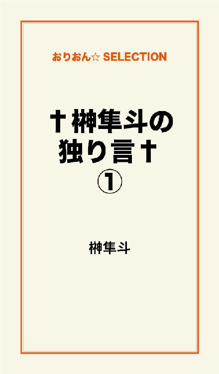
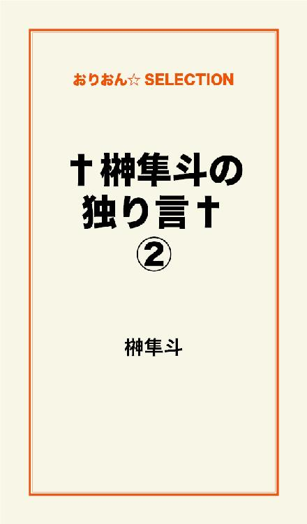
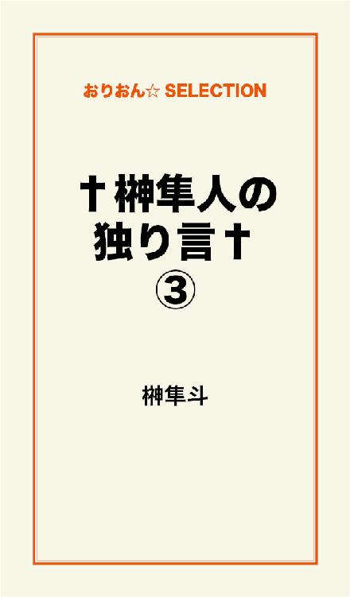

| †榊隼斗の独り言† | |
| 榊隼斗 | |
この本は横書きでレイアウトされています。
また、ご覧になる機種により、表示の差が認められることがあります。

目次
顔がとかじゃなくて
カッけぇヤツって居るじゃん。
まぁカッけぇヤツって
顔つきもカッけぇんだけど。
俺がカッけぇと思ったヤツを
あんたが見てカッけぇと思うかは別で
判断基準は人それぞれだし
万人ウケするもんなんてねぇ。
でも生き方とか
考え方とか
カッけぇ人間になりたくて
カッけぇと思ったヤツの真似して
だけど
人の真似ってダセぇってやめて
自分なりのカッけぇを探して
そんで
人にカッけぇって言われんのを望んでんのか
自分でカッけぇって認めれんのを望んでんのか
欲張りだから両方で
人からカッけぇって言われても
自分がそう思えなきゃ嫌だし
自分でカッけぇと思っても
人から見てダセぇのは真っ平で
こんなこと考えてる自分がダセぇって
気付いちゃってんのに
考えんのがやめらんねぇ。
結局俺のなりたいカッけぇヤツって
どんなヤツなのか考えて
夢見て
翼生やして
空飛びたくて
現実見て
地に足着けて
堂々と歩きたくて
バカになれるほど
頭良くなりたくて
死を見据えられるくらい
生を楽しみたくて
だからカッけぇヤツになりたくて
そのためには
今のダセぇ俺もちゃんと認めて
自分の足で進めるようになんなきゃいけねぇんだ。
俺から見たあんたはカッけぇし
憧れで
「マジ、カッけぇよ」
って
目ぇ見て言えっから
俺もそれに近付きてぇし
そんでそれを追い抜きてぇし
俺のゴールが何処にあんのか
まだ全然見えてねぇけど
こんな所じゃ止まってらんねぇ。
独りぼっちは慣れてんだ。
慣れてたって淋しいんだ。
声に出して叫べるようになったら
俺はもっとカッけぇヤツになれんだろ。
手を広げればでっかく見えんだ。
手を差し伸べりゃ温かく思えんだ。
何でも自分の気持ち次第
確かに
乗るか反るか選んだが勝ち。
神と天才が闘ったら
どっちが勝つのだろう。
神が絶対なのか
それとも
天才が上回るのか。
ダチと話してた。
「俺たち、子供作れるのかな」
高校の頃から
よく子供出来なかったなって
そういう生活（性生活）をしていた。
俺もたまに思う。
子供を作ることが出来る体なのか？
ダチも思うところがあるようだ。
今まで運良く（ある意味悪く）
受精しなかっただけなのか
それとも種なしなのか
俺たちに繁殖力があるのか？
精神科の薬のせいなのか
だいぶ前から性欲がない。
多分、俺はフェロモンを発していないだろう。
性的な色気も皆無だと思う。
もし子供が出来たら......
自分の子供は欲しいと思えない。
育てていく自信がない。
親としての愛情
その見本がない。
死んだ幼なじみは言っていた。
「子供なんか絶対要らない。
子供が欲しいなんて
ナルシストの考えだ
俺は自分に似た子供なんて
気持ち悪くて見たくない」
そして子供を残さずに死んでいった。
子供が出来たら？
この世界で、その子供は
生まれたことに喜びを抱くのか？
ダチの子供は
パパ大好き
そう言っていつもくっついて回りそうな気がする。
じゃあ、俺の子は？
俺の、子供は？
俺は欲しい、欲しくないに拘らず
作っちゃいけないのかもしれない。
忘れんな
自分の罪を
生きてるってことは
罪持ってんだ
だから忘れんな
死んでも持ってくんだ
そんで
持ったまままた生まれんだ
生きるってのは
罪を重ねんだ
それを忘れんな
Company
このほうがしっくりくるか。
何かこう、人の話とか読んだり
テレビで流れてる歌聞いたりして
家族ってのが何なのか
俺の中で解んなくなってく。
家族ってのは
何だか知らないが
あったかくて
一番近くて
調子の悪いときとか
一番に気付いて
ぎこちなくても
不器用でも
手を差し伸べてくれる
そんな印象が伝わってくる。
本当にそうなのかな。
俺が感じた温かさって
血の繋がってないばぁちゃんで
もう死んじまったけど
うちの家は他人ばっかで
何かおままごとみたいな
そんな家庭だけど
それなりに家族してて
親が居ないと子は産まれないけど
親が居なくても子は育つんだよ。
親代わりになってくれる人
助けてくれる仲間
それが
Family（Company）なんだよな。
俺が学生の頃
尊敬してたのは両親で
会社辞めて
ばあちゃんが入院して
精神的に崩れてから
親ってのに疑問を持ち始めて
初めて入院したとき
親の有り難みを知って
だけど
退院する頃には
その気持ちが消え失せて
逆に敵だとも思えて
よく考えたら
ぬくもりをくれてたのは
その血の繋がってない
ばあちゃんだけで
俺の家の人間は
俺を含めて
みんな冷めてんだ。
だからぬくもりなんてない。
伝わってこない。
ダチからの声とか
伸ばされた手には
血が通っててあったかい。
俺の異変には気付かない家族
俺の異変に感付く仲間
どっちが大事だ？
家族が遠い。
心の距離が、遠い。
仲間との距離がそれを埋める。
「もし家族と仲間が
死にそうになってて
どちらかしか助けられない
どっちを助ける？」
俺はどっちを選ぶ？
頭でちょろっと考えたとき
仲間に決まってんじゃん
そう思った。
だけど
家族の死ぬ姿を想像して
改めた。
俺が犠牲になって
両方助けたい。
きっとその時
俺は意識を失いながら笑うんだ。
俺にとって
敵に思えるはずの家族も
深層心理じゃ大切なんだって
そう気付かされた今日。
今は親に顔向けなんて
全く出来ないけど
ガキの頃の俺が笑う。
間違いなく
あの人たちと暮らしてたって。
今は解んなくなっちゃってるけど
それなりの恩は感じてて
恩返しだってしたいと思う。
死に目看取って
もう俺は大丈夫だからって
有難うって言いたいし
その前でも後でも
新しい家族作るかもしれないし
仲間と頑張って行くよって
胸張って墓前に立ちたいんだ。
だから
だからこれ以上
俺の敵にならないでくれ。
My Family......
生きてるってことは
いつか死ぬってこと。
出会ったってことは
いつか別れるってこと。
今まで色んな人に出会って
話をして
でももう記憶にない人も居て
いつの間にか
知り合いじゃなくなっちゃう
そんな人も居て
すげぇ仲良かったはずなのに
話し掛けたら
まるで初めて会った人みたいな
そんな対応されたりとか
いつまでも
俺のことを覚えてて
心配とかしてくれる人も居て
出会った人を
忘れない能力があれば良いのに。
今の俺を認識して
構ってくれる人たちが居て
ネットとか
コミュニケーションサイトとか
知り合いが増えて
前はテレビや雑誌の中で
出会うことなんて
全く思わなかった人たちとも
コミュニケーションを
いつの間にか取るようになってて
色んな知り合いが
色んな風に繋がってて
ガキの頃とか
雲の上の人だと思ってた
有名人とか
大人になって
行動範囲とかも広くなって
知らないうちに
出会って
話すようになって
もしかしたら
会いたい
出会いたいと思えば
そいつに近付けんじゃないかって
そんな気がしてきて
どっかでそいつと
知り合いの知り合いの......とかで
繋がってんだろうなって
そう思う。
出会って
仲良くなって
軽口とか叩き合って
一緒に居ると楽しい人たちとも
そのうち別れがくるんだ。
別れがくるその前に
与えてあげたいものを
渡してあげられるか
伝えたい気持ちを
伝えてあげられるか
大好きな君を
抱いてやれない歯痒さ
再会して
握手して
ハグしあって
またねって再会の約束して
リングの上で光ってる人とか
それを周りで支えてる人たち
俺もそのうちの一人になれるかな
知り合ったの人の
タイトルマッチでさえ
応援に行けなかったり
少しでもチカラになりたいのに
何も出来ずに別れていくのかな
いつの間にか離れてしまう人たち
疎遠になって合わなくなる人たち
本当は
もっと俺にだって
何か出来るんじゃないかって
そう思うのに......。
どこかでいつか
また俺が何かに
ふっ飛ばされることがあって
跳んでる俺を
受けとめる人はやってくるのか
まだ死ぬときじゃないって
助けの手が伸ばされるのか
みんなともう二度と会えない
そんな状況に陥ることは
何度もあった。
それでも俺は生きていて
またみんなと再会してる。
少しずつ広がるネットワーク
意外なところで繋がる輪
この人すげぇんだぜって
誇りを持って紹介できる仲間たち
俺は彼らのチカラになれてるか？
もっとチカラが欲しい。
別れてしまうその前に
俺が居たことを
覚えておいてもらえるのか
殻から這い出そうとして
内側から殻を壊したくて
世界に出て
飛び立ちたくて
落下するとき
また拾われんのかって
別れながら
また懲りずに出会いを求める
これからまだ長い人生で
知り合いたいって思う人と
知り合えるのかもしれない。
そのために
別れという犠牲が必要でも
それを覚悟して。
愛は金を生まねぇよなぁって思う。
愛は金で買うものじゃないが
愛には金が掛かるもんだ。
なんて思ってる俺には愛なんてモノが何なのかよく解らないんだけど。
それだけ生きていくには金が必要ってことで
生きるってことの中には愛が含まれてるのかもしれないと思う。
その愛に気付けない俺は生きることがストレスで
愛って言葉もストレスで
何で「好き」じゃダメなのかも解らなくて
家族ってモノの意味も解らなくて
家族だから解るはずだっていうのは信じられなくて
家族の中に愛がなきゃおかしいとも思わないし
そんなものは存在しない家庭もあるんだってことで
俺に子供が出来たとして好きになって貰える自信なんてないし
愛せるかどうかさえ危うい気がして
そんな俺だから
子供なんて作っちゃいけないんじゃないかって
愛のない家庭で子供はきっとまともには育っていかないってことは解ってる。
俺がそう（それ）だから。
起きるとコーヒーが飲みたくて
口が淋しくてタバコを吸って
喋る相手も居なくて
Jの声だけ聞く日とか多くて
偏頭痛に悪いのは解ってるけど
カフェインの摂取がやめられなくて。
俺は周りの大好きな人たちに
愛ってモノを与えることが出来ていますか？
周りの大好きな人たちからの愛を
ちゃんと受け取るチカラがありますか？
LOVE&PEACE
aiとheiwaって何故かPAIRで
一緒の場所に存在するモノかもしれなくて
そうしたら
俺の居る場所は平和じゃないのかも
だから俺は
自分の家が怖くて
自分の部屋が怖くて
自分のベッドが怖くて
帰りたいって思うのかも
何処に居ても基本的には帰りたくなって
場所を移動して
移動して
移動して
ずっと此処に居ても良いかなって
そう思うところは
ただ一つだけ
最近俺が手の平に乗せてるモノが発している光を
何に使えば良いのか
この温かいRayが冷たくなる前に
何かに使わなければ
俺が絶望を受けとめる前に。
思い出して子供の頃
今から比べて色々不便で
そんでもって、近かった
今は随分便利になったね
昔に比べて豊かになったね
遠くを見るのが楽になったね
情報網も広くなった
その分家に鍵掛けて
自分の心も偽れて
家の中で人と出会い
心の繋がり薄っぺら
ゲームが出来たよ
セーブが出来るよ
持ち歩けるよ
繋がるよ
だけどどうして
だからこうして
肌に触る温度知らない
拡がる視界
遠退く視点
おかげで近場が見えてない
隣の人の名前知ってるか？
直に話したことあるか？
見ろよ
ワイドショーのインタビュー
聞けよ
近所の人のコメント
前より距離が遠いだろ
温もり感じれるトコ居ないだろ
これからどんどん便利になって
世界もどんどん拡がって
俺たち動かず遠視になる
近くの温もりが見れなくなる
知ってる？
今は小学校の教室に設置された
『落とし物箱』には、記名してある物が入ってるんだ。
気付いた？
『記名してある』
って言葉に。
名前が書いてある物を拾っても
その当人に届けないってこと。
そしてそれが長期間放置される。
掃除の時間、ほうきで掃いてて
消しゴムとか鉛筆が落ちてたら
あなたはどうする？
今の小学生はもっぱら
ちりとりで取って
ごみ箱に捨てるんだってさ。
絶対に誰かの物なのに。
「マスクなくしちゃった」
「あぁ、そういえば
名前の書いたマスクが
ごみ箱に入ってたよ」
見過ごすところか？
拾って一応確認したりしないか？
それを教える大人は居ないのか？
『落とし物箱』
消しゴム落として見に行って
自分の名前の書いてある鉛筆
見付けても拾わないんだってさ。
なくなったら代わりを買えば良い
思いやりのない社会。
思いやりのない子供たちに
命の尊さ
物の大切さ
どうやって教えれば良い？
鉛筆と消しゴムの家は筆箱なんだ
おまえも家に住んでいるだろ
一人で帰れないのに
誰も連れて帰ってくれなかったら
おまえは悲しいだろ
おまえは同じことをしてるんだ
自分の身になって考えてくれ
そう思ってする例え話をしても
理解してはくれない。
人が痛くても
自分は痛くないんだよ。
自分が痛くても
他の人に痛みは解らないんだよ。
そして
消えた痛みは
すぐに忘れるんだ。
人にされた嫌なこと
何でされたかは忘れ去って
被害者意識しか残らないんだ。
思いやりを
どうやって教えれば良い？
何かが足りない。
何が足りないのかは解らない。
補う為に何をすれば
手に入れれば良いのか解らない。
眠剤を飲んで眠る準備をしたのに
眠りたくない。
何かがしたい。
でも何もしたくない。
淋しいのとも何か違う。
苦痛な訳でもない。
嗚呼......
自分に見えている此の世界で
何に手を差し伸べれば良いのか。
独りでは食べていけない
自分を生かすことも出来ない。
そんな自分が
生きているのは何故なのか。
眠いのに眠れない。
何故か脳が冴え渡って
寝返りをし続けて
朝を迎えたことがないだろうか。
薬を飲まないといつもそうだ。
薬を飲んだって
そういう日がある。
睡眠をとれなかった翌日
学校や職場で眠くなったりする。
それなら
帰ったら思う存分寝たら良い。
俺は薬を飲まなければ
翌日も眠気は来ない。
睡眠をとれなかった分
体力の消耗が激しくなる。
エネルギーの消費が激しくなる。
その分、腹も減る。
だが食欲の薄い俺は
我慢できてしまう。
予備電源に切り替えだ。
みるみるうちに痩せていく。
薬が切れて数日眠らなければ
一日三食食べたとしても
簡単に２～３キロくらい減る。
体は不調を訴える。
でも脳は寝ようという信号を
送ってくれはしない。
その場に動かずに
立っていることが苦痛になる。
歩く足取りも重くなる。
間違いなく
体がおかしいと訴えかける。
体を支えているのが苦痛で
横になっても眠気はこない。
目を閉じてじっとしていても
時間ばかり過ぎていく。
眠ることで貯えられるはずの栄養。
それが出来ない体。
無理が掛かっているのは明らか。
心臓への負担も直に感じる。
眠くなく
眠れなく
眠りたいと思う日が続く。
睡眠欲が
ないわけではないと思うんだ。
食欲や性欲は
いくらでも抑えられるし
他の事で満たせるもの。
睡眠は代わりが無い。
寝なければ消耗していくだけ。
３日目、４日目。
寝るのではなく
気を失うのではないか
と錯覚する。
それでも眠くはない。
俺の回路はおかしいんだろう。
睡眠欲、食欲、性欲......
俺はどれもが薄い。
人間なのだろうか。
薬を飲んでも
寝付くことに失敗して
少しずつ研ぎ澄まされる神経。
いつもより強く感じる恐怖感。
薬を変えてもらって
味覚障害を起こしてまで
寝ることには
眠れない間がつらいからで
それでも眠れなくて
太陽が昇ったのを確認して
日付も記憶も滅茶苦茶で。
それでも薬にすがるしかなくて
俺を眠らせてくれるのは薬だけ。
強い不安を和らげて
睡眠に入れる心境を作る薬。
気を失ってぶっ倒れてしまったら
どんなに楽だろう。
酒を飲んでも酔えなくて
動き回ったあとでも
疲れたぁって
心地いい入眠は記憶に無い。
眠れなくて
ベッドでウダウダ
寝返りを打っている時間は嫌い。
これを飲めば必ず眠りに就ける。
そんな薬が欲しくて
探しているところ。
どうして睡眠障害になったのか
何かを恨んでみたって
何も変わりはしない。
「そんな人だと思わなかった」
そう言われたことはないだろうか？
逆に言ったことはないだろうか？
俺は、その言葉は間違っていると思うんだ。
「私（俺）はこんな人間ですよ」
って教えてて違った場合は、嘘つきなワケ。
「そんな人だと思わなかった」
はニュアンス的に使うところじゃないよね。
では実際に使い方の例を出そうか。
まぁ、ネットなり初対面で会ったときって猫かぶってたり、それなりに慎重になるわけさ。
それで接していって、自分の中に相手像が出来てくるわけ。
あぁ、この人はこういう人なんだ、良い人だなぁ。
勝手な理想像が出来ていく。
で、実際に接してみたら違った。
だから
「騙されてた。そんな人だと思わなかった」
そう言うんだ。
でもさ、それって先に理想像を作って信じ切ってたヤツが悪くない？
キーポイントは「思わなかった」って言葉。
思ってただけだってことに気付いてくれ。
勝手に人を理想化しておいてそれに伴わない言動をしたら非難するってどういうことだ？
迷惑極まりない。
そしてその前に、自分の観察眼を呪え。
芸能人や有名人がちょっとしたスキャンダルを起こして印象が悪くなったりする。
そういう時に離れてくのが勝手に理想像作って裏切られたと思っちゃう人たち。
俺の周りのアスリートたちも負けたら手の平返されたっていう人が多い。
俺はそういうの、イヤだな。
負けても、タイトルから陥落しても、応援しつづけたい。
肩書きだけに付いている支援者にはなりたくないんだ。
「そんな人だと思わなかった」
言葉の攻撃だ。
相手には受けとめていいのか解らない爆弾を投下されているって気付いてほしい。
まぁ俺は会ったことがなくて「榊隼斗像」を作っている人の理想像は会ったときにぶち壊す自信があるけどね。
「そんな人だと思わなかった」
という人が居れば、もうお付き合いは無しって事で結構。
思い込みの激しい自分本位の方は苦手だし。
そして人にならまだしも、本人に向かって
「そんな人だと思わなかった」
なんて押し付けがましいことを言う人とは俺がお付き合いしたくない。
何か俺、間違ってる？
出会いを大切にしたい。
「出会いがない」
そう言いながら行動に移さなければ出会うことなんてないわけで
何だかんだ言って動き回ってれば出会いってあるんだ。
その出会った人が自分に合うか合わないかは運だけど。
今まで知り合ってきた人を思い出してみて
自分が友達と思える人はどれくらい居るだろう？
顔見知りくらいにしか思えない人も居るだろう。
そして、相手は自分を友達として扱ってくれているのか
それとも顔見知り程度の認識なのか。
俺の周りには忙しい人がいっぱい居る。
でもその無い時間の中で俺のことを気遣ってくれる友達、仲間がいる。
世間ってのは狭いもので、ひょんな繋がりで有名人と顔見知りになったりもする。
そこから親交が深まるか、変わらず顔見知りのままなのか、それさえ忘れ去られてしまうのか。
それはその人と自分が合うかどうかってのがキーポイントであって
親密度が上がっていって、何かをしてあげたいと思うようになったり
逆に苦手意識を持って距離を置くようになったりする。
顔が広い人って居るよね。
それにも種類が分けられるけど。
でも顔が広い人たちは、心が広くて大きな人だと感じる。
接すると温かくて、包み込んでくれそうなオーラを持ってる。
そんな人たちに知り合えた俺はラッキーだ。
出会いに恵まれているって、ある意味才能だよね。
それでも相手が俺と接したくないと思えば離れていくし、仕方の無いこと。
俺はそこまで大きい人間じゃないから、逆に心のデカイ人たちと出会って、支えられて、恵まれてる。
俺の周りはとあるスポーツの選手が多い。
上のランクに居る選手も、俺のことを一人の人間として認識して接してくれる。
それを知らない人が
「そんな人と知り合いなの？ 凄いね」
と言ったりするのだが、間違いなく凄いのはその人たちで俺じゃない。
俺は凄くないんだよ。
凄い人と知り合いなんだぜ！って自慢はいくらでも出来る。
でも自分自身のことでの自慢は出来ない。
人に何かをしてあげるというのは自己満足で自己主張だ。
近づきたい。
その気持ちの表れ。
俺も色々な人に、「俺」を見てほしくて、構ってほしくて。
周りの人が親切で大切な人たちだから恩返しもしたくって。
俺に何が出来る？
俺にどんな力がある？
俺の知り合いは、友達は、俺のことどう思ってる？
「お前は俺の友達だ！」
って断言してくれる人はどれだけ居る？
その人たちを裏切らないように、楽しい人間関係作っていきたい。
最近色々な人と知り合ったり
個人的に語ることの多くなった俺だけど
出会いは他愛の無いもので
俺も相手も全くお互いがどんな人間で
どんな人生を送ってきたかなんて
知らないことの方が当たり前にザラなわけで。
ちょっとした先入観を抱かせる肩書きを持っている方も
持ってらっしゃった方も少なからずいるのだが
だから何だ、と。
何も解らず接していた方が、周りの人と話してみたら
実は過去に凄い実績を持っていた。
実は周りから一目置かれるような著名人だった。
まあ、そんなことだって多々あるわけ。
そんな時にどうする？
いきなり態度を変えるのか？
なんだかそれって、失礼な気がするんだ。
肩書きがあってもなくても、その人はその人であって
何も変わらない。
相手が自分との関係をどういうものかと認識して
いつも通りの対応をすれば問題はないだろ。
反対に恐縮して疎遠になったりするのは
俺自身の個人的な考えとして違う気がする。
肩書き、職業などは俺にとったら
友達、知り合いとして接していく上で関係のないものであって
大切なのは
相手のスケジュールや性格を把握して合わせるということ。
相手が自分を受け入れてくれているかどうかということ。
そう思ってる。
肩書きって何だ？
俺はその人の肩書きと付き合っているわけじゃない。
出会った時に肩書きを持っていることを知っていて
それに惹かれて関係が出来た人だっている。
でも、付き合っていくうちに更に相手の内面、本質に惹かれて
肩書きが関係なくなることって多くないか？
その肩書きがなくなったら関係も終わり。
そんな付き合い方、俺は御免だ。
俺に遠慮が足りないのはそのせいなのかもしれない。
まあ、そこで拒絶されたら終わりなんだけど。
肩書きのある人間が、世間を気にせず
一人の「素の自分」を出せる場所の一つが俺かもしれないんだ。
出会った後で肩書きが付いちまった友達の
かけがえのないかもしれないその場所を
遠慮して奪う必要ってないよな。
尊敬について思うのだが
肩書きが幾ら立派で大きいものであっても
尊敬出来ない奴はいるもんで
反対に何も肩書きなんて持っていなくとも
一般、世間で認められていない人の中にだって
尊敬に値する人間がたくさんいるわけで。
人に尊敬させるのは肩書きではなくて
その人間の生の言動と、人生経験から得た何かと
培われた器と中身なんだよな。
俺にもいっぱい尊敬している人間がいて
尊敬できない人間もいて。
周りを見渡すと「格好良い」人がいっぱいいて
接して話すと「凄い」と思う人がいっぱいいる。
こんな人達に出会えた俺は幸せ者だと思う。
みんな良い面も悪い面も持っていて
付き合っていく過程でお互い影響を与えあって
人間として成長していく。
年上・年下関係無く他人から学ぶものがある。
相互に糧になる。
そういう関係が、きっと「良い関係」ってものなのだろう。
だから人との繋がりは大切にしたい。
俺は出会う人出会う人、みんな良い人に恵まれていると思う。
有難いことだ。
そんな中で、俺のことを認めてくれる方も何人か居ると思うと
それに答えられるような
自分でも納得いく人間になりたい。
少なからず俺の言動も誰かしらに影響を与えているのだから
それが良い影響であって欲しいじゃないか。
言葉っていうのは難しいもので、同じことを言おうとしているのに
ニュアンス一つで仲違いの原因になったりするものだ。
俺は言葉が足りない上に、余計なことを言う。
嫌な人間だ。
でもたまに凄く奥深くに意味を隠していることもあるわけで
それに気付いてもらえると嬉しい。
結構サシで話したり、メールなどで語れば解ってもらえるようだが。
何にしろもっと言葉の勉強をして、人間的にも大人になって
心の広くて暖かい、俺が尊敬する人達みたいになれるように
日々精進が必要だな、と。
つまりは俺はまだまだ青二才だってことだな。
いつからか過呼吸になってから
俺の呼吸は浅くなった。
発作を恐れた体が無意識に
そうさせているのだろうと思う。
俺が呼吸困難に陥るほどの発作を
起こすことは無くなった。
しかし、原因が解らない。
毎晩のように襲ってくる
目眩
息切れ
動悸
医師の診断は「過呼吸」。
「どんな時にそうなりますか？」
「何かその直前などに特別なことはありましたか？」
解らない。
何もない。
不安感は漠然としたもので
強いて言うなれば
生きていることだろうか。
「ストレスの発散方法を」
カウンセリングでも話した。
冷静に考えれば考えるほど
俺は
ストレスを発散すると同時に
ストレスを蓄めてしまう
そんな気がした。
生きて活動をすることが
全ての生物にとって
ストレスなのではないか。
きっと俺だけじゃない。
みんなそうなんだ。
だからと言って別に俺は
死を選ばない。
死んだら
もう生まれてきたくない。
軽く目を伏せると
奥二重に気付く。
それは俺が冴えない顔を
していることが多いから。
人に逢って作る笑顔
薬で出来た笑顔
誰しもが持っている
心の闇
それに打ち勝てない弱い俺。
楽しい時間の途中から
少しずつ蝕む酸素。
体に蓄まる空気。
呼吸をするのが怖い。
息をすればするほど苦しくなる。
そして吐き気。
体の中の全て
脳みそも内臓も
全部出てしまえば
俺は楽になれるだろうか。
今
一番欲しいものは
楽な体勢。
立っても
座っても
寝転がっても
苦しくて
目眩がして
体が痛い。
体を動かしたいけど
場所を移動することが
きっと一番の苦痛。
この漠然とした病は
治るのだろうか
それとも
上手く付き合って
生きていくものなのか
診断書を見ると
色々な病名が書かれてる。
何故そうなってしまったのか
原因が解ったなら
回復することが出来るのか。
薬では抑えられなくなる衝動
理性で抑えられない欲求
その答えは何処にあるのか
或いは
ガキの俺が握っているのか
五体満足でも
中身が壊れてるヤツらも居る。
それを認めるか
甘ったれだと言い切るかは
あんた次第だ。
自分の中に入力したことを出力する。
伝言ゲームを思い出して。
人から人に伝わるほど
違うものになってく。
噂だって尾ヒレ葉ヒレが付いていく。
入力したことを出力するには
自分の中で処理しなきゃ出来ないんだ。
だから変化していく。
人から聞いたこと
教えてもらったこと
他の人に伝えるには
自分を通さなきゃいけない。
世の中に流通してるものって
良いものが多くて
その中で自分がチョイスしたのを
他の人に知ってほしくて
言葉にしたり
形にしたり
上手く伝えるって難しくて
例えば歌だとしたら
カッけぇ歌をカッけぇって
思わせなきゃいけない。
俺を通して
カッけぇって伝えられるか？
俺がカッけく歌えなきゃ
場は盛り上がらなくて
知ってる人が聴けば
逆に場が白けたりとか
実はスゲェ大変な作業だって知った。
だって
自分がリスペクトしてるヤツを
カッコ悪くされたら
何だかムカつくだろ。
許せないだろ。
その言葉を
歌を
形を
自分の中で処理しても
人にカッけぇって
そう伝えられたなら
少し形が変わっても
それはそれで成功だよな。
心に悲しみが溜まっていく。
目を覚まし時間が経つにつれて
心に穴が空くんだ。
空いた穴に
悲しみが詰まっていく。
何か他のもので埋めたいのに
それが何だか解らなくて
体中が悲しくて
苦しくて。
自分の体を抱き締めてみても
歯痒くて
切なくて。
冬眠のように
眠ってしまいたいのに
眠りに就くのが怖くて。
消えてなくなりたいのに
死にたくなくて。
何かを残したいけど
全てを葬りたくて。
だから
悲しくて
悲しくて。
「その気持ち、解ります！」
って簡単に言われると腹が立つのは俺だけか？
特にあまり話したことなくて親しくない人とかにさ。
どれだけ俺のこと知ってんだ？って。
俺の気持ち解ってたら出てこない言葉だと思うんだ。
人の気持ちなんて解らないものだろ。
理解できなくて当たり前なんだ。
だって違う人間なんだから。
同じ痛みも苦しみも、同じように感じてるかなんて解らねぇだろ。
あんたが感じてる痛みより、俺のほうが強く痛みを感じているかもしれない。
逆に痛くないかもしれない。
体のキズも、心のキズも。
ガキの頃言われた
「こんな小さいのに、可哀相に......」
可哀相にしたてあげてんのは、そう言ったヤツだろ。
もっとツライ立場のヤツなんて、いっぱい居るだろ。
だからガキの頃から同情とか嫌いで、
同じクラスにいた、戦争の話とか悲しい物語とか見てその悲しさが解った風にワーワー泣くヤツとか見て鼻白んで
そういうヤツって幸せってーか、おめでたいなぁなんて考えてたっけ。
俺の痛みなんて、誰にも解らねえし
あんたたちの痛みも悲しみも苦しみも
悪いけど俺には理解できない。
そうだろ？
つらいんだろうな。
そう思っても、所詮他人事だろ？
つらいのは本人だけなんだ。
痛いのも苦しいのも自分なんだ。
俺がどんな風につらいか、人に説明すんのは難しくて、
更にそれを理解してもらうのは無理に近い。
身動きとれなくて
動けたと思えば
マイナスの行動に出て
「何でこんなことするの？」
「もうこういうことしないで！」
俺の行動、理解できないだろ。
俺にも解らねぇのに
そいつに解るわけなんかねぇだろ？
何故自分に刃を向けるのか？
対象が人に向かうヤツはみんな言う。
俺は全ての怒りが自分に向かうんだ。
その原因や、引き金は誰にも解らない。
同じ病気の仲間にも解んねぇ。
「その気持ち、解る！」
って言うヤツは、そのあとに自分の例をあげる。
明らかに違うことを語りだす。
不幸自慢か？
人の痛みや気持ちが解ると思うのは、おこがましいんだ。
解った振りして同情するなんて、自慰行為と一緒だろ？
優越感に浸れて気持ち良いんだろ？
理解しようと手を差し伸べるのか
それとも哀れみだけで目を背けるのかは勝手。
余計なことは言わないほうが良いってことだけは確かだ。
幾つもの奇跡の果てに
存在している。
そんなことは解ってる。
しかし、そんなものはこの世界
至る所に在るんだって。
俺がここに居るのは奇跡で
生まれて来たのも奇跡で
だから自分を大切にしろって
そう言われても納得行かない。
この世のモノ
全てが奇跡でなりたってんだ。
奇跡は
偶然にして必然。
俺は別に存在しなくても
良かったのに。
人に自分の個体の存在を
知ってほしいのに
誰も知らない町に
蒸発してしまいたいと思う。
どこに居ても
俺は俺で。
存在しちゃってる。
それは
死んだ後にも残る事実。
存在ごと全て
無くなっちまえばいい。
分かり合うにはどうしたらいい？
気持ちを伝えたい
だけど言葉が出てこない
言葉は
選んでるつもりでも
時に君を傷つけるから
君の言葉も
時に俺を苦しめてんだ
ただ何も言わずに
抱き合ってれば
それで良いのかもしれない
笑い合って
時には
涙流しまくって
一緒に生きていくために
君と一緒に生きていくことが
俺の願いなんだ
憎しみ＝妬み≠怒り＝悲しみ
やるせない思いで深夜外に出た。
待っても来ない人を待って。
当たり前、約束してないし。
タバコを沢山吸った。
コーヒーを少し飲んだ。
ベンチで膝を抱えた。
泣けるなら泣きたかった。
雨が降ってくれば良いのに。
この季節の空気に
大粒の雨が降るのが好き。
その雨を浴びながら
散歩がしたい。
誰も解っちゃくれない。
そう諦めて
他の人の事も解ろうとしない俺。
自分の気持ちも解れない俺。
もう、たくさんだ。
ねぇ、
幸せって何？
あんたは今幸せ？
あんたが幸せを感じるのはどんな時？
テレビや情報が言うよ。
もっと不幸な国があるって。
もっと不幸な人がいるって。
だから俺たちは幸せなの？
平和で豊かな日本に生まれて
教育も受けさせてもらえて
食べることも
ろくに不自由しなくて
水道捻れば水が出て。
だから、何？
指の１本欠ける事無く
五体満足で産まれて
難病にかかっている訳でもなく
病気になれば
病院に行けて
だから、何？
あんたは小さい頃の夢、
何になりたかった？
その夢は叶った？
そうじゃなくても
就きたい職に就けてる？
行きたい学校に行けた？
趣味は楽しめてる？
友達は居る？
自分の居場所を持ってる？
恋人は居る？
恋をしている？
家庭に愛情はある？
家で安心できてる？
その一般的に「幸せ」とされてる
この項目たちに丸がつけられても
幸せだと感じられる？
それとも
もっと不幸な人たちを見て
あぁ、自分は幸せだ。
って安心する？
俺はそうは思えない。
もっと貧しい国に生まれて
俺たちからしてみたら
可哀相とか思っちゃう生活を送る
そんな人たちを見たって
実はその人たちのほうが
幸せを感じてんじゃないかって
そう思う。
病気を持って生まれたり
難病にかかって戦ってる人も
もしかしたら
そんな状況だからこそ
幸せを素直に
受けとめられるんじゃないかって
そう思う。
他の人を見て
楽しそうだな
幸せそうだな
そう見えて
自分と比較して
羨んで
人の幸せを打ち壊したくて
当たり前の
自分の幸せに気付けない。
自分が幸せなんだって
そう言い聞かせても納得行かない
自分は不幸だ。
そう思うことは簡単なんだ。
幸せは続くと幸せじゃなくなる。
そう思えなくなる。
平和で豊かな日本で
幸せを感じ取る
豊かな心の持ち主は何人居る？
もしかしたら
貧しい国の人たちのほうが
心は豊かなのかもしれない。
あんたの幸せは、何？
俺の幸せは、何処？
洗濯物を干した
心地好い風と暖かい日光を浴びた
しあわせってこういうのを言うのかな？
ふ、とそう思った。
落ちて
墜ちて
堕ちて
どうでも良いことで
上がるっきゃねぇ
大好きなＣＤ掛けてビートに合わせて体揺らせ。
居場所ねぇし
金ねぇし
友達少ねぇし
ダチからメールの返信来ねぇし
労働しても報酬ねぇし
自分の事以外で上がるっきゃねぇじゃん。
ちょっと上向き。
まだまだ下の中。
もう少し後の季節になると
夜遅くに土砂降りの雨の中
散歩したくなる。
濡れても良い服装で
サンダル履いて
お供はタバコ
帰ったら即入浴
雨で心の汚れ落として
シャワーで体の汚れ落として
風呂で体を温めて
早く来ねぇかな。
何で気付かないんだよ
びっくりさせるために切ってるんじゃねぇ
気を引きたくて
薬いっぱい
飲んじゃうんじゃねぇんだよ
苦しいんだよ
何が何だか
よくわからないけど
ただ苦しいんだよ
「ありがとう」
気付くと
この言葉をよく使っている。
勝手に口をついて出てくる。
本心だから。
小説を書いていても
たまに思う。
このキャラ、
またお礼言ってるよ
って。
でも実際、それだけ
「ありがとう」
って言葉は使われるべきものなんだ。
だけど
ダチの会社に
「ありがとう教」
ってのに入ってる人がいるようで
何に付けても
「ありがとう」
と言うそうだ。
ありがとう。
感謝の気持ちだ。
色々なものに
感謝の念を抱いて生きる。
確かに素晴らしい教えだ。
だがそのダチの同僚は
ダチが
「おはようございます」
と挨拶すると
「挨拶してくれて
ありがとうございます」
って返すらしい。
「今日も
可愛い笑顔を見せてくれて
ありがとうございます」
......。
明らかに違うだろ。
そこは
「おはようございます」
って返すところだろ。
どんな宗教でも有りがちだが
教えは正しいのに
信者が自分勝手な解釈をして
そして動いて宣伝して
おかしな宗教だと
認識されてしまう。
悲しい現実。
そしてその
「ありがとう教」の同僚は
「ペン取ってくれる？」
と言うので取ってやったら
何も言わずに受け取ったという。
そこだろ！！
ありがとうって言うの、
そ こ だ ろ ！！
そんなヤツの薄っぺらい
「ありがとう」
なんて要らない。
挨拶はさ、
ありがとうでも
ごめんなさいでも
おはようでも
おやすみでも
久しぶりだねでも
またねでも
心を込めなきゃ意味ないだろ。
心の入っていない
「ありがとう」
「ごめんなさい」
が
一番聞きたくない。
俺は、少しでも
感謝の念を伝えられるように
「ありがとう」
って言い続けんだ。
雨が降っている。
どしゃぶりの雨。
その他はなにもなくて
一人タバコをふかしてね。
煙が風に弄ばれて
地面にバチバチ音がして
ベンチに座ってコーヒー飲んで
閑かだなぁって。
雨は心の汚れを洗い流してくれる
そんな気がしないか？
乾いてひびの入った心の肌を
潤してくれる。
そんな気がしないか？
一人和んで
燃え尽きたタバコの灰に
愛を感じんだ。
実際は冷たいけど
本当は暖かいんじゃないかって
雨を見ると思う。
俺は不幸者じゃないよ。
可哀相でもない。
だから簡単に可哀相なんて言わないでくれ。
だけど、幸せ者でもないし
人に羨まれるような人間でもない。
だから簡単に過大評価しないでくれ。
「人生をリセットしたい」
思ったことあるだろ？
そのままの知識を持ったまま
もう一度やり直したいって。
俺は思わないんだよね。
現状に満足してるから？
いや、そんなに幸せじゃない。
諦めてしまった？
いや、そうでもない。
じゃあ、何故？
俺はね
人生をやり直したくないんだ。
戻りたい時期もない。
やり直す意味が解らない。
俺は
生まれたこと、
生きていることに感謝が出来ないんだ。
親に産んでくれて有難うなんて思えない。
俺がしたいのは
リセットではなく
デリートだ。
生まれたことを
無かったことにしてくれ。
でもさ
死にたいわけじゃないんだ。
何故かって？
死んでも
俺が生きていたことの痕跡が残るじゃん。
それを考えると吐き気がするね。
もしも全て俺の物を捨て去って
墓とかも作らないで
骨も砕いて散骨してもらっても
人の心に俺が居たことが残る。
そいつら全員死ぬまで残る。
俺はこの世に存在していることが嫌なんだ。
そして、
この世から居なくなって自分の関係ないところでまで
痕跡が残るのが気持ち悪いんだ。
だから死んでも
生まれた変わりたくない。
このまま大気に溶けてしまえれば良いのにな。
心が満たされないから
過食する。
そして
現実を受け入れられず
食物を吐き出す。
ストレスを発散させるために
過食嘔吐する。
そんな女の子たちを
たくさん見てきた。
彼女達は
それがおかしいことだと
ちゃんと気付いてる。
だから治すために
病院で診察や
カウンセリングを受ける。
摂食障害。
あんたは
どれだけ彼女達が苦しんでるか
解るかい？
安易に理解出来るなんて
思わないで欲しい。
でも
否定もしないでくれ。
そして
心をえぐるように
軽はずみに突付かないでくれ。
俺は摂食じゃねぇけど
他の病気は持ってる。
持ってるけど
彼女達の苦しみは解らねぇ。
きっと彼女達も
俺の病気の苦しみは
解らねぇと思う。
同じ摂食でも
原因は人それぞれなんだ。
もしも出会ったとしたら
本人が話さないかぎり
原因には触れないであげてくれ。
２００８年８月12日。
俺は入院してる。
期間は予定では２ヶ月。
あと１ヶ月半くらいある。
なのに
家に帰ることを考えると
不安で仕方なくなる。
自分が、情けねぇ。
それに拍車をかけたのは
入院して数日後
実家に外泊したときだ。
「病院の生活に慣れるのも
良くないから」
相方にそう言われ
忘れ物もあったし
納得して外泊した。
帰宅したら親に
「こんなに早く外泊出来るのに
入院してるのか」
と言われた。
元々家族の苦手な俺。
自宅が苦手な俺。
嫌いというより
怖いという感情......。
家族が、そして
自宅が
不安と恐怖を生む。
俺の居場所は何処だ？
俺の周りの
カッけぇヤツらみたいに
俺は身動きが取れねぇ。
心に病気と診断されてしまう
不安を抱えてもだえてる。
「生きてるってことは
みんな不安なんだ」
そういうことを言わないでくれ。
百も承知だ。
俺が苦しいように
度合いが違っても
みんな苦しいってのは
解ってんだよ。
だけど
家族や自宅が怖いなんて
異常だろ？
入院してて
退院したら家に帰んだって
そう思うと眠れねぇ。
なのに家から出られない
しがらみが多すぎる。
それをとっぱらってくれるヤツが
ポンと目の前に現われるほど
世の中巧く出来てねぇ。
弱いものに
手を差し伸べているように見えて
実は大多数が見下してんだ。
俺の周りのカッけぇヤツは
みんな俺自身の病気を知りながら
同等に付き合ってくれる。
凄ぇ有難ぇことだ。
でもって、
落ちてりゃ励ましてくれる。
普通に扱ってくれる。
なのに
一番理解してもらわなきゃ
巧く生活していけない家族が
病気を認めようとしねぇ。
俺はどうしたら良い？
退院に近くなったら
また家に外泊することになる。
それでまた失敗すれば
退院する日が
伸びちまうのかな。
親と顔を合わせんのが苦痛。
家に帰りたくねぇ。
早く家を出てぇのに
出るための方法がねぇ。
退院したら
また腕を切りながら
薬の多量摂取しながら
俺は働くんだろう。
カッけぇヤツらに近付くために
俺の
心の平和を取り戻すために......。
〈２巻につづく〉

目次
俺にはたくさんの戦友が居て
いっぱい味方も居て
でも
俺の中にも
外にも
強靭な敵が居て
毎日が戦争で
心から笑える日々を
取り戻すための戦争で
戦友と励まし合って
味方に癒されて
爆弾を抱えて敵に立ち向かって
ミサイル打たれて怪我をして
潜んで地面を這っても
ナイフを突き付けられて
相手は原爆のスイッチ
握り締めてるし
でも
このまま死ぬのが嫌だから
精一杯戦ってる。
戦ってるつもりなんだよ。
それさえ解ってもらえず
苦しんでる戦友たち。
疲労する味方たち。
どうしたら終わる？
Live or Die......
俺は無事に生き残れるか？
恐怖を抑えられるか？
助けてもらっても終わらない。
これは俺の戦争だから。
２００８年８月26日。
入院して１ヶ月以上経った。
ここ数日、俺は病んでいた。
病んでいるから入院しているのだが、その度合いが違った。
大部屋に新しく入ってきた人のいびきが脳を刺激して眠れなかったのだ。
結構でかい音がしてても寝付けるはずなのに、そのいびきを聞くと嫌なことを思い出す。
不安になる。
俺は頓服薬を貰いながら、落ち着くまで暗い食堂で膝を抱えていた。
１日に貰える頓服薬を毎日のように使いきり、睡眠の不十分な俺は憔悴していった。
最初は過食に走り、増加傾向を見るはずの毎朝の体重測定は、直ぐに拒食による減少傾向を見るものに変わった。
主治医に相談しても部屋を移動する許可は出なかった。
日に日に悪くなる体調。
最悪なことに、昨日は固形物どころか、コーヒーや緑茶さえ俺の胃は受け付けてくれなかった。
血糖値をあげようと牛乳に砂糖を混ぜて飲んでみたりしたが、それも吐いた。
その結果、１日で体重が２キロ減った。
その結果を見た主治医から、やっと病室の移動の許可をもらえたのが今日の午後だった。
それまでは、独りになりたくても大部屋の壁越しに声を掛けられたり、昼間も寝ている老人のいびきに耐えられず、喫煙所で女の子たちの黄色い声を聞きながらタバコを吸った。
女の子たちの輪には、入れなかった。
何のために此処に居るんだ？
俺は此処に、生きていくためのパワーを養いに来たはずだ。
個室に移ってやっと気が付いた。
独りで居て
そしてたまに話をしに外に出て
タバコ吸って......
英気を養おう。
これからの人生を楽しむために。
俺は人としてどうよ？
とてもじゃないが
自分でも一人前とは言えねぇ。
でもさ......
言いたいことってあんだろ。
声に出して叫びたいことってあんだろ。
女友達が言った。
「あたしは男をモノとしてしか見れない」
俺は吐き気がしたよ。
人をモノとして見るのは構わねぇさ。
大切に、扱うのなら。
でもそういうことを言うヤツって大概モノを大切にしねぇ。
飽きたらポイ捨て。
使えないと判断すれば、容赦なく切り捨てる。
それが人間なのかもしんねぇ。
だけど俺は気に入らねぇ。
エコとか呼び掛ける気なんて更々ねぇけど、イライラすんだ。
大人でも子供でも男でも女でも、人は人だろ。
欲しくて手に入れたもんは大切にするもんだろ。
だから俺はそういう人間がキライだ。
それが本当の人間の姿だったとしてもキライなことは変わんねぇ。
自分自身を否定することになっても、俺のその考えは変わんねぇ。
俺は、人としてどうよ？
I dislike hate.
嫌うという感情がキライ。
好きで居てぇ。
「嫌い」は痛ぇ。
怖ぇ。
辛ぇ。
苦しい。
だからそれを排除してぇ。
I dislike human.
人間は信じられねぇ。
だから信じてぇ。
期待はしねぇから
嫌わせないでくれ。
すげぇ怖くて逃げたくても
目を背けずに居てぇから。
だからあんたを信じさせてくれ。
I dislike me.
こんな俺はカッコ悪ぃから
消えてしまえば良い......
『私、隼斗くんのこと
苦手かも......』
ある女の子が言ってたってさ。
誰から聞いたか忘れちまったけど
又聞きってヤツ？
何で陰で他の人にぽそっとそういうこと言うのか俺には意味解んねぇけど。
まぁそれは置いておいて。
嫌いじゃなくて苦手なんだ。
そう思ったら、何とも思わなかった。
もともと好きなタイプの人間じゃねぇし。
苦手ってことは、俺に何か自分に無い『強さ』ってのを感じてる証拠じゃねぇかって
嫌いは強弱の念が関係ない。
でも苦手ってのは
「私これには弱いです」
ってことだろ？
入院してやっと気付いたんだ。
嫌いと苦手の差。
『嫌い』が苦手な俺。
誰かが言った。
「あの人苦手だなぁ」って思っておけば良いよ、って。
腑に落ちなかった。
納得出来なかった。
俺は苦手なヤツとだって普通に上っ面で付き合っていける。
でも『嫌い』は排除したかった。
やっぱ俺には
嫌いなヤツを苦手だな、でなんて済ませらんねぇ。
嫌いなもんは嫌いなんだ。
それで良いんだって、割り切れるようになった。
これは俺の進歩だ。
そして、俺を苦手だって言ってたらしい女の子は
会うといつでも俺の顔色を伺ってる。
その姿と、他のみんなの前でバカ騒ぎしたり悲劇のヒロインぶってる姿を比べると
実に滑稽だ。
俺も苦手な相手に対して、そんな態度で接してんのかな？
多分違ぇ。
壁を一枚......シールドを張れば良いだけだ。
そうだろ？
苦手だからってビクビクする必要はねぇ。
『苦手』と『怖い』も違ぇんだからさ。
破裂しそうな衝動......
胸に溜まってくマグマ
ここに居ても良いのか？
でも
俺はここに居たくねぇんだよ。
本来居るべき場所ってどこだ？
あんたの落ち着く場所ってどこだ？
家？
学校？
職場？
それとも他のどこか？
俺の......
俺の居場所は？
どこに居ても落ち着きやしねぇ。
家から
家族から逃げ出して
病院に入院して
でも
ここも
俺の居るべき場所じゃねぇ。
どこに行けば良い？
どこにも行きたくねぇ。
だけど
どこかで落ち着きてぇ。
この矛盾が俺を苦しめる。
居場所って必要なのか？
すべての大地が俺を拒む。
俺は受け入れられたいのか？
だけど受け入れられるのが怖ぇ。
だから破裂しそうで
しそうで......
体中から血が吹き出すような映像が脳に浮かぶ。
みんな居なくなってしまえば良い。
好きな人も
嫌いなヤツも
みんな居なくなりゃ良いんだ。
誰でも良いから殺したかった？
違う。
この世界をぶち壊してぇんだろ？
結局、一番手っ取り早いのは自分自身が死ぬことで、
でも死ぬのは怖ぇし
この世から居なくなりたくて
生きてると矛盾だらけで
それに耐えられない俺が居て
自傷行為を繰り返したって
自殺行為には走れなくて
地球が破滅してくれたら
俺も一緒に破滅出来るのに。
一つ標的を作って集中攻撃することにより集団の統率を取る。
その標的になるモノを、スケープゴートと言う。
スケープゴートってのは、他人の罪をかぶる人とか身代わりって意味だ。
古くは旧約聖書でユダヤ人が人々の罪を背負わせて野に放った
「贖罪のヤギ」
から来てるらしい。
近年浮き世離れしてた俺には忘れ去ってた現象なのだが
久しぶりに目の当たりにして思った。
「愚かだ」
と。
一つ標的を倒すと、新たな標的を作り出して攻撃する。
ほんの少し前まで仲間だったはずが
一瞬にして四面楚歌。
出る杭をひっこ抜くように......。
生け贄を差し出せば
丸く平和に納まるんだってさ。
バカらしい。
学生の頃、顕著に見えていた現場は、年を重ねて良い歳こいてもあるんだぜ。
あんたの周りにゃ、そういうことねぇか？
気付かずにやってねぇか？
いつの間にか
自分がスケープゴートにされてねぇか？
やだやだ、そんな世の中。
何で一人一人タイマンで付き合っていけねぇんだろ？
集団行動のとき
自分と合わないヤツとは距離をおけば良いだけじゃねぇのかな。
大人になろうぜ、大人にさ。
Requiescat in Peace.
この世を去った
兄よ
祖父母よ
母よ
友よ。
安らかに眠れ......
俺はまだ生きてる。
死にかけたことなんていっぱいある。
でも生き残ってる。
みんなが言う。
『守られてるんだよ』
『何かするべきことが
宿命があるんだよ』
俺の、生きてするべきことって何だよ。
それが達成されたら
俺は死ぬのか？
俺を守って何になるんだ？
生きることによって何を得られんだ？
今の俺にとっちゃ
どちらかと言うと「呪縛」だ。
生きていたくても
死ぬヤツが居れば、
死にたくても
何故か生き残っちまうヤツも居んだ。
あんた、生きるのは楽しいか？
ダルくねぇか？
俺が解放されんのって
いつなんだろう。
そろそろ迎えに来てくれても良いよ？
生きた分だけ、肉体にも精神にも残っちまう傷跡がある。
痛い思いをして学んできたことを活かさなきゃいけねぇって傷跡が語る。
肉体の目に見える傷跡。
精神の目に見えない傷跡。
目を逸らしちゃいけねぇ現実を教えてくれんだ。
これからも傷は増えんだろ。
生きてるかぎり続くだろ。
だから俺たちは成長すんだ。
経験を積んだ分、学習しなくちゃダメなんだぜ。
何も学ばずに不幸自慢したって、何の役にも立たねぇぞ。
煙たがられるだけだぜ。
俺は自分をそんな可哀相な人間にしたくねぇから。
傷跡から
現実から......
目を逸らさねぇことにした
世の中には、中毒性、依存性の強いもんがあふれてる。
アルコール、タバコ、コーヒー。
チョコレート、薬物。
異性、家族、ペット。
ギャンブル......
あと、趣味って呼ばれるもの。
あんたも何かに依存してんだろ？
執着して中毒になってねぇか？
ダメだって法で決められてんのもあれば、許されてるもんもある。
それに脳が侵されてんだろ。
それを断ったら禁断症状が出たりさ。
それをするために犯罪に走ったりさ。
結局、何かにすがってないと生きていけねぇんだ、俺たち。
それを失ったら辛ぇんだ。
でもダメなことはダメってことも理解しなきゃいけなくて
俺はそれと戦っていくんだ。
大切な人たちが哀しむから。
大切な人たちが心配するから......。
心に傷があって家に帰れず、精神科を退院して職業訓練塾の寮に入った青年が居た。
最初は慣れない生活に戸惑いつつも、彼は入院費も塾の費用も、頑張って仕事に就いて親に返したいんだと言っていた。
毎日のように入るメール。
『キツイです。でも頑張ります』
それがいつしか変わっていった。
『ツライ。逃げ出したいです』
塾を脱走して、ホームレスにでもなろうかと思うってな考えで居て、俺に相談してきた。
そんな甘い考えでホームレスなんて俺がこの世で一番キツイだろうと思う職業が勤まるとは思えない。
壁を乗り越えなければ、同じことを繰り返すだけ。
それは俺にも言える。
社会復帰をするために、慎重にならなきゃいけねぇことと
思い切って一歩踏み出さなきゃいけねぇことがある。
この国で生きてくには、基本的に金が要る。
それを作る手段ってのは大切なことなんだ。
俺は自立してぇ。
自分で働いて金を作って生きていきてぇ。
だから慎重にもなる。
焦って失敗した仲間をいっぱい見てきたんだ。
慎重になりすぎて踏み切れず、プレッシャーに負けた俺が居た。
もう繰り返しちゃいけねぇから、
失敗も許されねぇから
慎重に腹をくくろうぜ？
なぁ、ＢＯＹ．
「世の中お前中心に
回ってると思うなよ」
ってな言葉を聞いたことないか？
直訳、お前自己チューだよってことで。
俺は面と向かって言われたことねぇけど
みんな自己チューに生きてんだと思うんだわ。
だって、自分の脳ミソでしか考えられねぇし
自分の目でしかモノを見ることって出来ねぇじゃん？
人のために何かしたりすんのも自己満足だろ？
そう思わねぇ？
自分の損得勘定が全てだよ。
世の中、みんながね。
Evolution＝Degeneration
そう思わねぇか？
何か得るたびに何かを失うように出来てんだ。
そんなPARADOXが当たり前で
それがどんどんデカくなるのが速くなって
敏感なヤツは感じてる、
『温度差』
ってヤツ。
科学が進んで便利になるほど
人間の心は冷めてくってね。
辺りを見渡してみて。
何か冷たいだろ。
人も街も
発展するほど冷えてくんだってさ。
進歩する分
必要なものが減ってんのに
エコなんて叫んでも
もう手遅れなんだって親友が言う。
人間が絶滅すんのが
一番地球のためだって。
減ってく温度の分、温暖化は進んで
この星の核にも集まってて
そのうち自殺を選ぶように自爆して消滅すんのかもな。
掃除とか整理整頓が苦手だって人が結構居るけど
ふとした瞬間に
身辺整理をしたくなったりしねぇか？
モノが増えすぎたと思ったときとか
要らないモノを捨てたりさ。
暇潰しに手に取った携帯デンワのアドレス帳......。
開いてみたら、もう連絡取らねぇだろって思ったヤツの番号消してみたり。
俺は自分の部屋に居ると
たまに全てのモノを捨てちまいたくなる。
大好きな本やＣＤ、ＤＶＤも。
何も無くなっちまえば良いと思う。
そうしたら何か変わるんじゃねぇかって思う。
想像してみてくれ。
自分の部屋の家具の無くなった姿を。
そしてそこに横たわり
大の字になる自分を......。
新しくその部屋に何か置くとしたら、俺は一体何を選ぶだろう。
もし知り合い関係、血縁も含めて縁を切って
独りきりになったらどうなんだろう。
すっきりするかもしれねぇ。
ただ淋しいかもしれねぇ。
何もない、ただ白いだけの空間で
自分独り、何も見ず、何も語らず暮らしたら
どのくらいで狂うんだろう。
それとも、心に新しい何かが生まれんのかな。
Meanin．．．
Reason．．．
Regret．．．
何かが解んのかも、とか思ってみた俺。
愛とか恋ってなんだろう。
違いも解んなければそれぞれの意味も解んねぇ。
憧れとか好みとか。
理想と現実とか。
よく解らねぇ。
思春期を抜けて
大の大人と言われる歳になって
子供が居てもおかしくねぇのに
未だに意味が解んねぇ。
昔憧れたタレント
気になったクラスメイト
年上も年下も関係なく気になった人たち
何人かの恋人たち。
好きって何だ？
ガキの頃恋人に言った
「愛してる」
今じゃ、
そう簡単に口にしなくなった。
恋人への愛情
ダチへの愛情
家族への愛情
それぞれ違う。
よく解んねぇけど
何かそう感じる。
でも目に見えねぇから解んねぇ。
だから言葉に出したくねぇ。
恋人が居るのに
他の子に目が行って
仲良くなりてぇ。
２人で遊びに行きてぇ。
もっと話しててぇ。
そんなこと思うことがある。
恋人と別れる気も
浮気する気もねぇけど
そう思うことがある。
恋人と居るときの安心感。
気になる子と居るときの
ドキドキ感。
それが愛と恋の差なのか？
俺は浮気は許さねぇけど
心変わりは仕方ねぇと思ってる。
キープとか有り得ねぇから
よく自分の気持ちを探る。
だから
一番大事で守りてぇヤツを
一番近くに置いておくんだ。
このドキドキ感は
そいつが居る安心感の中で
存在してるって
でも
愛とか恋とか
やっぱ意味解んねぇや。
電車で隣の席のオッサンが話し掛けてきた。
俺はユニセックスな服装だから、見事に性別を間違えられた。
ジャマイカンな帽子をかぶったオッサンが言う。
「その服装に意味はあるのか？」
着たい服を着ているだけだ。
「異性に逃げられることはないのか？」
逃げたら逃げたで結構。
だって、これが俺なんだから。
逆に願い下げだ。
そのオッサンは外国語のチラシを俺に渡した。
ライブをやるから来いって。
興味が無いから行かないと言ったが、チラシは受け取った。
オッサンが片言の日本語で言う。
「外国に興味はある？ ないかな」
俺は日本に生まれ日本で育ったのに、この国のことをあまり知らない。
だから外国を知る前に日本を知りたい。
そう答えるとオッサンは笑った。
「そういう人、少ないよ」
俺は少数派でも怖くねぇんだ。
自分の考えが一番重いんだ。
それで差別されるなら勝手にしてくれ。
オッサンは俺のことが気に入ったのか、俺が降りる駅までずっと喋ってた。
俺を可愛いとかカッコいいとか、リップサービスもふんだんに頂いた。
なぁ、オッサン。
俺は今まであんたが接してきた人間と比べてどうだ？
これが俺の普通なんだぜ。
あたしにとって、男は物だから。
そう言ったあの子が嫌い。
だって、そういう人間はさ
物も大切にしねぇじゃん。
俺は物を粗末に扱う人間が嫌いだ。
人≠物
そんなこと関係ねぇんだ。
問題はそこじゃねぇだろ。
人を物として見るのは構わねぇんだ。
大切にしてるか？
知ってるか？
物を大切に出来ねぇヤツは
自分も大切に出来ねぇんだぜ。
そのくせに
何故か自意識過剰で
自分の中で悲劇のヒロイン
もしくは悲劇のヒーローになっちゃったりしててさ。
人の持ち物見て僻んだような発言して
だからあの人には（あたしのつらさが）解らないんですよ。
自分の持ち物見えてねぇのな。
勿体ないオバケが出るぜ。
あんたも気を付けな。
自分自身にも
周りの人間にも。
何だかよくわからないけれど、悲しい。
身体中から助けてという言葉が聞こえる。
でも何をしたら助けられるのかわからない。
助けを呼ぼうにも、何をしてもらったら良いのかわからない。
夜ベッドに入って、口から零れる「助けて」の言葉。
俺は何を求めているんだろう。
緊張してもいないのに動悸は早くて
偏頭痛を和らげるために出されている筋肉の強ばりを取る常用薬も効かずストップ
頓服薬の疼痛時で様子を見ることになった。
身体は発熱しているような感覚があるのに体温には出ない内熱。
過呼吸。
心電図にはいつも出ない不整脈。
肋間神経痛。
明らかに事故が原因のはずの腰痛......。
いつもそうだ。
体の不調を訴えて病院に行って検査しても、どこにも異常は診られない。
精神的なものだと済まされて、ラムネみたいな気休めの薬をもらって終わり。
全部気のせいなら良いのに。
異常を訴える俺はウソつきみたいだ。
みたい、じゃなくてウソつきなのか？
もう、うんざりだ。
騙し騙し笑うのも
異常なしと診断されるのも。
親とも最後の入院だって約束して
入院しても何も変わらないって実感して
心から 笑いたい
元気って何だろう。
みんなツラいのに、何で笑っていられるんだろう？
もう何だかよくわからないよ。
漠然とした不安感。
何に対して不安なのかもわからない。
大切にしてくれる人たちが居る。
どうして？
悲しい。
よくわからないけれど、悲しいんだよ。
悔しくて 涙も流れねぇ
そんな夜を 毎晩過ごしてる
本当の俺はこんなんじゃねぇんだ
妥協も後悔も したくねぇ
でも現実は簡単なもんじゃなくて
成りてぇ自分は 程遠く
気持ちだけ焦って 焦って
背中の真ん中 穴ん中
俺の手を見ろよ
俺の目を見ろよ
血まみれだろ
真っ黒だろ
俺の声聴けよ
俺の芽を視ろよ
詞の裏 感じてけ
くだらねぇ空想で 笑ってた
夢見て抱いて目 輝かし
ガキの頃の俺 今も俺
でかくなったのは身体だけ？
いつの日からか 諦めを覚えた
いつの日からか 信頼を忘れた
裏切られたって構わねぇ
去るものを追う 虚しさ
俺の手を見ろよ
俺の目を見ろよ
血まみれだろ
真っ黒だろ
俺の声聴けよ
俺の芽を視ろよ
心の蓋 ぜってぇ開けねぇ
泥だらけになって 笑う俺
すっ転んで 笑う俺
汚れて傷ついて 笑う俺
だから今の俺があんだろ？
寄ってたかって 悪口言われ
どうだって良いこと 密告られて
陰口叩かれて うしろ指さされ
だから何が言いてぇんだ ０ｉ！
いきなり罠にはめられて
何も出来ずに泣く俺じゃねぇぜ
それが当たり前かのように
糧にして 這い上がってた
俺の手を見ろよ
俺の目を見ろよ
血まみれだろ
真っ黒だろ
俺の声聴けよ
俺の芽を視ろよ
詞の裏 感じてけ
俺の手を見ろよ
俺の目を見ろよ
血まみれだろ
真っ黒だろ
俺の声聴けよ
俺の芽を視ろよ
詞の裏 感じてけ
本当の俺は閉じ込めてある
ドロドロとした 感情
出来事は忘れねぇ 今も
ここに居る俺を 俺にするから
妥協したくねぇよ
後悔したくねぇよ
納得して 諦めてぇ
カッコ悪くていい
恥をかいてもいい
結果を 自分を
受けとめられる器を
手に入れる この手に
悔しくて 涙も流れねぇ
そんな夜を 毎晩過ごしてる
気持ちだけ焦って 焦って
背中の真ん中 穴ん中
だけど心の蓋 ぜってぇ開けねぇ
壊れたい。
つーか、破裂したい。
とあるボクサーの祝勝会で、テーブルをはさんで子供を二人連れたお父さんが座っていらっしゃった。
息子さんはボクシングジムに通っているらしい。
良いなぁ。
息子とボクシング観戦か。
俺には、連れてきてくれる父親が居ない。
父親が居ないわけではない。
連れてきてくれる父親が居ないだけなのだが。
しかし、俺には一緒にテレビ観戦（当時は地上波でいっぱいやってた）してくれる、義理の母親が居た。
中学の卒業祝いに後楽園ホールに連れていってくれた。
大ファンだった選手の東洋タイトル決定戦だったな。
だから今の俺が居るのかなぁ。
でも、何かやっぱり何処かに父親に連れていってもらうって良いなぁ。
俺ももし、いずれ子供が出来たら......同じ趣味持ってくれたら良いのにな。
何だか具合が悪くて、政治とか経済のことを考えた。
もっと頭が良くなりたいって思った。
ガキの頃、大人になれば世の中の仕組みが解るようになると思ってたし
大人は働いて金を持って普通に暮らしてると思ってた。
俺の家の敷地は周りの家の２件分あって
友達には金持ちだと思われてた。
でも親には金が無い、金が無いと言われ続けてて
でも俺はそこまで不自由を感じなかったから
金が無いなりにも極貧で苦しんでいるわけじゃないとは分かっていた。
景気が良かった頃、うちの父親は自営業で車の部品の模型を作る仕事をしていた。
その頃、年ごろの姉は服を買うからと親に金をもらって出かけるのを見ていた。
俺が年ごろになった時には、もうバブルは弾けてて......
同じように金を貰えることはそうそうなかったし、金額も少なかった。
まぁ、それは仕方がない。
だけど......バブルってなんだ？
弾けたってことは、何かをきっかけにガクっと景気が落ちたってことか？
そんなことを考えたら、解らない自分が恥ずかしくなった
俺は中学の頃から社会科が苦手だった。
地理には興味が無い。
だからそれはどうでも良い。
が、公民は興味深い科目だった。
でも理解出来なかった。
塾というものに通っていなかった俺は、学校以外で勉強をしなかった。
授業を適当に聞きながら黒板をノートに綺麗に写していくのが俺の勉強で
他の教科はそれで問題がなかったが、社会科だけは駄目だった。
教科書を読んでノートを見直しても意味が解らなかった。
読解力とかの問題じゃない。
多分堅苦しい言葉や専門用語が多くて解らなかったんだろうと思う。
実は興味があって、自分の小遣いで公民の参考書を買ったこともある。
それでも理解出来なかった。
理解するための何かが、きっと足りなかったんだ。
憲法も、１条と９条しか覚えられなかった。
雑学としてでも良いから、覚えてみたかったのだが
何度も挫折しながら読み直して、この２つのみ。
９条は２つしか無かったから、１条は何度も最初から読んだから必然的に。
当時は３条くらいまでは覚えていたと思うけど、今じゃさっぱり思い出せない。
前に道を歩いていて、政治の看板に「憲法第９条を守ろう」と書いてあったけど
基本的に個人に呼び掛けて効果があるものなのか疑問を感じた。
１条に関しては、何故象徴を持たなくてはいけないのかが理解不能だった。
小学校の頃、政権番組を見ていて父親に政治家は偉いのか？と聞いたことがある。
父親は、国民のほうが偉いし、国民より政治家のほうが偉いと意味不明な答え方をした。
今でなら理解が出来るが、当時は腑に落ちないまま終わった。
でも政治家が何をしているのかというのは、今になっても解らない。
それは俺が政治というものを解っていないからだろうか。
テレビで見ても、何でこの人たちはどうでも良い人の挙げ足をとって口論しているんだろう？という印象しか受けない。
そして
「遺憾に思います」
この言葉。
だから？
大切なのはそのあとだろ？
遺憾に思ったからどうなのよ。
そう思うのは俺だけなんだろうか。
上の立場だから、軽々しい言動をとれないのかもしれないけど
何か無責任じゃないか？
つーか、遺憾って何だよ（辞書引け）。
難しい言葉使って、うやむやに逃げているように見えてしまうのは俺だけなの？
ニュースだって難しくて解りづらい。
もっと砕けた言葉で解りやすく説明してくれる放送はないの？
昔あった、こどもニュースっていう番組は良かった。
子供にも解るように説明してくれるんだ。
ニュース番組がみんなこんな感じなら、子供のうちからすんなりと興味を持って政治とか経済と向き合っていけるんじゃないかって。
最近テレビを見ないから解らないけど、そういう番組が増えれば良いのにな。
習ったデフレとかインフレとかもよく解らない。
景気回復って言葉を聞いても、庶民の苦しさが上向いてるとは思えない。
「景気回復のためにたくさん物を買っていただきたい」
って言われたって、買う金は無いよ？
物価は目に見えて上がっていくのに、賃金は変わってないんじゃない？
庶民には金が無いのに、有るところには有るもんで......
でも有るところからは殆ど動かない。
税金対策って何？
店のレジとかの近くに設置されてる募金箱。
駅前に募る募金活動の人たち。
自分さえまともに食わせられない俺。
生活が火の車で保険や子供のお年玉貯金を切り崩してる人。
何これ。
世の中が解らないよ。
会合って、良いご飯食べながらじゃないと出来ないの？
安く済ませて「つもり貯金」みたいに募金したり、負債に回したり出来ないの？
都合、都合って意味が解らない。
これは俺が無知なせいなの？
支持率集めって何？
支持率って、ちゃんと仕事してるよって、世の中良くなってきたよって
そういうのがあって勝手についてくるものじゃないのかなぁ。
病院に視察しに行って
「何でこんな食っちゃ寝してるやつらのために金はらわなきゃいけないの？」
って、何処の病院に行ったか知らないけど
そんな上っ面しか見れない人が一国を背負って平気なの？
一度庶民と同じ暮らしをして、病気の家族でも持ってみたら良いよって思っちゃダメなところ？
俺が勉強して政治とか経済のこと解るようになってさ、それで何か変わるわけじゃ無いと思うよ。
だけど、政治家とかのマニフェストとか聞いたり読んだりしても解らないで投票してるよりは良い気がする。
日本人って、日本を大切にしてない人が多いと思う。
日本を良くしようって思わせる何かが、この国には足りない気がする。
景気をあげるために頑張ってきた人たちだって沢山居るんだろうね。
だけど世界情勢とかも関係してるだろうからうまく行かなくて、停滞してんだよね？
平和って何？
幸せって何？
豊かって何？
もっと勉強したら解るの？
モヤモヤするよ。
イライラするよ。
だから落ち込んでるんだよ。
ちょっとした、いや、俺にはセンセーショナルな騒ぎが起こって
ダチがコミュニケーションサイトの日記にそのことを書いてたら
コメントにカチンとくるものが書かれていた。
知り合いだから心配、信じられないって書いてある日記に対して
「どのくらい知り合いなの？ 人は解らないよ？ 怪しいから捕まったんだし怪しいんじゃない？ 解らないけど」
ってな感じで。
頭に来たので最初は
解らないなら書かないでください。
って書いたんだけど、やっぱり消して
頭ごなしだと
「こんな奴の友達だから」
とか思われるのも癪なんで、冷静に注意するコメントに書き替えた。
そのあと様子を見に行ったら......手の平を返したようなコメントが。
でも謝りの言葉は一切なし。
俺に対してもスルーだった。
まぁ良いか。
俺の知り合いじゃないし。
その次は他のサイトのゲームの攻略について教えてほしいとメールが見知らぬ人からいきなり来て
まぁ別に出し惜しみするようなものでも無かったので快く教えてあげた。
そうしたら、昼すぎにまた同じ人からメールが。
出来たのかな？と思って開いたら
「２つ目が出来ない」
......
ため語かよ！！
そして見に行ってみると、作り方を教えた花が１つ出来ていた。
......
その報告が先じゃねぇのかよ！！
プロフィールを見たら23才の女の子だった。
23才にもなってどんだけ礼儀しらずだよ......。
怒るを通り越して呆れた。
２つ目が作りたいなら１つ目と同じようにすれば良いのに、彼女の画面はメチャメチャ。
おバカだということが窺い知れる。
もちろんメールの返信には、丁寧に「知りません」と書いた。
そういうおバカを無碍にあしらって下手に悶着起こしても嫌だしね。
本当なら「死ね」と返したかったんだけど......。
コーヒーで薬を流し込む。
アルコールを入れても気持ち良くなれなくて
夜中の胸の軋みを抑えるために
タブレットを噛み砕く。
どくん
大きく鼓動が一回。
動いてねぇのに息切れして
寝付けねぇ。
痛みと不安を打ち消す薬を毎日飲まないと生きていけない。
寝るときに思う。
このまま死んでしまうんじゃねぇかって。
もう起きねぇんじゃねぇかって。
それが怖くて眠れなくなるときもある。
それを望むときもある。
生きたいのか
それとも死にたいのか
直接死に至る病にはかかってねぇけど
原因で自分を死に追いやる病......
夢や希望って何？
意味解んねぇ。
親にタバコをやめろって言われた。
肺癌になって苦しんで死んで欲しくねぇからって泣き付かれた。
俺はそれでも良いからタバコを吸い続けることを選んだ。
解ったって言った親は、俺のために禁煙補助剤を買ってきた。
仕方ねぇから試した。
俺はそれで、気を失った。
バカみてぇ。
だけど金のない俺には
タバコの出費が痛ぇ。
でも、ねぇとツライ。
少ない収入で、一番に考えんのがそれで。
ミサキが言った。
「腹が減ってタバコが無い。持ってる金は三百円。間違いなくタバコ買うよね」
全くその通りだ。
未来って何？
誕生日が来るたび
年が明けるたび思う。
まだ、俺、生きてる。
死に至らない病を抱えたまま
薬を飲み続けて自我を保って
それでもダメになって傷を殖やして
病院に突っ込まれて
金がねぇってぼやかれて
それでも生きてる。
シュンちゃんが俺の持ってる病気の中の一つと同じヤツになった。
「君はこんなキツい思いをしてきていたのか」
なったヤツにしか解んねぇんだって、身に染みた。
どんなに痛いと叫ぼうが
どんなにツラいと訴えようが
なってないヤツには解んねぇんだって。
その中で
解んねぇから心配してくれるヤツと
逆に突き放すヤツと......。
一番質が悪いのは
なっても症状が軽いヤツ。
「そのくらいで......」
個人差ってのを知れよ。
重くて苦しんでるヤツの目の前で飄々と言って除ける。
我が儘って何？
ミサキが言った。
「過呼吸になったけど、あれじゃ死ねないね」
俺はそういう死ねねぇ症状ばっかいっぱい持ってる。
もし一つでも死に直結する病だったら俺はどうする？
今よりずっと
生を楽しんでんのかもしれねぇ。
「日本に生まれたことを幸せに思え」
そう言われたとき
俺は発展途上の国なら
もっと幸せを感じられてんじゃねぇかって思った。
天の邪鬼な俺は
逆境に居ないと平和呆けする。
快楽主義って何？
ある日、通院に行った。
待ち時間に煙草を吸いに行くと
たまに見掛けるデカイ声でよく喋るおっさんが
周りの人を相手に何か話してた。
特に聞くつもりはなかったけど、デカイ声は耳を塞いでも聞こえてくる。
「直江マサツグがよぉ」
？？
「あれ、今年の大河ドラマでもやってるだろ？ 直江マサツグ」
......
兼続だよ！
マサツグって誰だよ！
あまりにもマサツグマサツグと大声で連呼するのでこっちが恥ずかしくなった。
そのあと、もう一度喫煙所に行ったら、たまに話す人がそのおっさんに相談していた。
どうやら盗聴器を部屋に仕掛けられている気がするということで......
おっさんはウザイ感じで相手をしていた。
俺はうるせぇなぁ、と思いながら煙草を吸っていた。
「静かになると、自分の声が聞こえてくるんだよねぇ......」
......
俺は知ってる。
その相談している人は、幻聴が聞こえるってことを。
盗聴器を仕掛けられているなら、自分の声が二重に聞こえると思う。
静かになって話してもいないのに自分の声は聞こえねぇ。
盗聴器を仕掛けられているんじゃないかって被害者意識も多分病気から来ているもの。
それに早く気付け......
ついていけません。
気分が良くない
眠れない
効かない薬しか持ってない
涙を流さず泣く俺が居て
声にもならない叫びをあげ
呻いて
苦しみ
藻掻き
ここに居るよ
ここに居るんだよ
何でここに居るんだよ
左耳の近くで風が嗤う
楽しそうに俺を嗤う
病院に行こう
そして終わったら
病んだ小説の続きを書こう。
風邪を伝染すように
菌を撒き散らせばいい
そうしたら治るかもしれない
俺が泣いてる
何で？
解らない
涙は出ない
どうして？
心が乾いてるから
泣いても何も変わらない
そんなことは百も承知
だけど泣いてる
涙を流さずに
気分が悪い
吐き気がする
だから寝てしまいたい
でも寝付けない
独り
部屋で飯を食べると涙が出る
厭で仕方がない
何が？
独りが？
飯を食べることが？
部屋にあるたくさんの物
長い間触れてない
必要ない？
無いと淋しい？
空っぽの部屋に住みたい
ただベッドが一つだけの
でもモノを捨てれない
ゴミと認識するまで
人が怖い
自分自身も含めて
人だけじゃない
何もかも
人の家に行く
洗い物をする
包丁が
艶めかしく煌めいて
俺を魅了する
涙の代わりに
血を流さないか？
その血液は鉄の味
ほら
生きてるって安心するだろう
安心って何？
目に見えないよ
この世は
目に見えないモノが多すぎて
手で掴めないモノが多すぎて
自分の身体に爪を立てて
千切りたい
鼓動が速くて煩いから
黙らせたい
涙が出ると
バカらしくなる
頬を伝うと
急にしらける
何かが足りなくて
その何かが解らなくて
手を広げれば
目に見えない何かが
零れ落ちていく
感情
昔から殺したかった
欲しくない
起伏
人を憎むことが嫌いで
騙し続けて
人を許して
平気な振りして
笑って
笑って
消滅したい
魂ごと
眠れない
眠りたい
だから泣いてるの？
そうかもしれない
静かな部屋で、布団に横たわって耳を枕とかに付けると
体の中の音が聞こえてくるよね。
血流の音とか
空気が気管を通る音とか。
まぁ一番聞こえるのが心音で。
調子が悪いとその音が
シュン、シュン......
キュッ、キュッ......
って感じで聞こえるんだけど、たまに
いきなり何も聞こえなくなるんだよね。
血流の音とかは聞こえるから、活動してるのは解るんだけど。
で、そこで探すために胸に手をあてても......
心臓の動きが感じられない。
何処だ？
何処行った？
と探すんだけど見つからない。
何で？
この現象はたまにあって
数年前、まだ家に恋人がよく泊りに来ていた時にもあって
ふと起きた恋人が心臓を探したり、息を確認していたという供述を医者にしている。
心臓かくれんぼ？
それともサボり？
何で居なくなっちゃうのかな？
普通にあることなのかな？
俺はキリスト教ではない。
そして今更だが、純日本人で英語は解らない。
だから間違ってたとしても、隼斗語だと思ってくれ。
調子があまり良くない日は自分で考えていた計画がバッチリ狂ってくれる。
本当は朝起きて、ルーズリーフとボールペンをお供にファミレスで入り浸る予定でいたのが
時計を見ても起き上がることが出来なかった。
何度も何度も目を覚ましては時計を見る。
体は重いまま。
そしてまたゴロゴロ。
数時間経って、部屋が薄暗くなった頃、やっとこ布団から這い出た。
菓子パンを食べてから、ファミレスに行き、何を思ったのかワインを頼む。
ルーズリーフを取り出して、小説の続きを考え始める。
ゴロゴロしている間に薄れてしまった記憶を呼び覚ましながらペンを走らせる。
体に合わないアルコールを入れる。
５００mlのデカンタはすぐに空いてしまった。
少しずつ文字で埋まっていく紙。
それから、ドリンクバーを頼んでコーヒーに切り替える。
アルコールとカフェインとニコチン。
体調が悪いくせにバカじゃないかと自ら思う組み合わせ。
アルコールのせいなのか、書こうと思っていたこととまったく違う話になっていく。
いや、それはアルコールのせいではなく、俺の行き当たりばったりな性格が出ただけだ。
閉店まで８時間近く粘って２話ほど書き上げる。
まだ最初から書こうと思っていたエピソードにもたどり着かないし
どんなエンディングを迎えるかも全然解らない。
店を出ると雨が降りだしていた。
近くて良かった。
気付いたら、凄く疲れていた。
更新している間に朝が来て
寝ずに病院に行くつもりだった。
が、バスに乗ったり歩いたりする気力も体力も残っていない。
Oh！ Jesus！！
調子が悪いから行くはずの病院に悪いから行けないぜ。
まるで内科で溜まる老人たちみたいだ。
調子が悪いからといって、連れていってくれる人も、代わりに薬を貰いに行ってくれる家族も居ないぜ。
昔からそういうのには縁が薄い。
甘えるなって
そういう運命なのさ。
余程のことがないと迎えはやってこない。
あの世からも追い返されるんだ。
いつも、いつもね。
Crazy my life.
終わりはきっと、呆気なく来るんだろ。
そんなことは、知ってるよ。
咳が止まらない。
いつまで続くんだろ。
Crazy about my life......
そんな風に思いたい。
俺、大丈夫だよね。
何が怖くて
何が不安なのか
解らないけど
きっと打ち勝てるよね。
ハヤト、頑張れ
大丈夫だよ。
励ましてくれる
大切な人たちが居る。
支えてくれる人たちが居る。
いつか昔みたいに
薬に頼らずに
眠ったり
笑ったり
出来る日がくる。
いつか、きっと。
ジムの会長にも認められていた俺の黄金の右ストレート。
打てなくなったかもしれない。
右足の膝下がマヒしていて、力が入らない。
片足で長時間立っていられないし
歩くときも引きずって歩いていて
今までと同じ速度じゃとても歩けない。
多分、今走れない。
両足で立つと、バランスを崩す。
血が上手く通っていなくて
右足は冷たい。
ストレートを打つときに
右足を強く蹴るクセがある。
それが、出来ない。
これは治るのかな。
主治医に話したら、渋い顔をされた。
内科、外科に通院することになると思う。
これがもし右手だったら......
絵が描けなくなってしまったら......
そう考えたら怖くなった。
痺れ始めて数日。
変化なし。
全身に広がって動けなくなってしまったら？
不安がつのる。
お願いします。
右手だけは......
〈３巻につづく〉

目次
朝と夜に抗鬱剤を、睡眠前には軽い眠剤を再開。
友人と電話をしたりして
寝ようと部屋を暗くして横になったら
凄い不安感が襲ってきて。
この不安が消えれば眠れるんじゃないかって、頓服薬の不安時をもらった。
だけど薬がすぐに効くわけもなく
不安に押し潰されそうになっていることに必死で耐えて。
だけど眠れるほどには回復出来なくて
あまり薬に頼るのは良くないと思いつつも
寝ずに居て、今日の昼間に寝たりしてリズムを崩すのも良くないという葛藤。
早く決めないと、不眠時が貰えなくなってしまう。
考えに考えて、結局不眠時を貰うことにした。
何だか負けた気分だった。
こんな状態で、２週間で戻れるのかっていう不安。
長いようで短いんだ。
今日、外来で良く話す看護師さんと話をした。
俺は主治医の居るときに来て下さいって注意されるくらい
通院をサボっていたはずなのに
病院側としては、真面目に通院する患者だと認識されていたらしい。
「調子良さそうだったのに、どうしたんだろうね」
そんな話が飛びかったという。
調子が良かったかと言われれば、どちらかと言うと悪かったかもしれない。
それを騙し騙し生活していて
いきなり来てしまった、あの言葉では表せない具合の悪さ。
あの恐ろしい感覚は、なんだったのだろう。
ボキャブラリーの乏しい俺の言葉で、一番近いとすれば
絶望感......？
何に対してとか、そういうのは一切解らない。
謎の感覚。
もしもまた、その感覚が襲ってきたら、どうしたら良いのだろう。
病棟で、みんなと談笑をする。
とても楽しい時間。
なのに、意識が飛びそうになる。
寝そうになるとかじゃない。
意識を失いそうになる。
遠退いていきそうな意識を、一生懸命繋ぎ止める。
こんなに楽しいのに、何故？
そして寝るために暗くした部屋で独り、自分に問い掛ける。
本当の俺......。
俺は誰だ？
暗い部屋で。
俺は実に良いご身分だ。
する気もない自殺未遂して
病院に担ぎ込まれて
一命をとりとめる。
そして病院を移り
自分が暮らす個室を手に入れ
ゆったりとベッドに横になる。
年齢を越えた仲間たちと
コーヒーを飲んで笑い合い
友人から連絡をもらう。
昼間眠っていても
誰も文句を言わない。
飯を残したって
誰にも怒られない。
費用は親持ち。
本当に良いご身分なのだ。
そんな良いご身分な自分が
嫌でたまらない。
俺は
自分を自分で
食わして生きてぇんだよ。
一人前の人間に
なりてぇんだよ。
何処から狂ったとか
何処から横道に逸れたかなんて
関係ねぇんだ。
中学生の俺は
英語の授業で聞かれたよ。
将来何になりたいか？
立派な大人。
いつになったら
理想の自分になれんだよ。
何かに押し潰されて
起き上がることも出来てねぇ。
いつになったら
一人で立てる？
俺は
本当は
一人で立ち上がることが
出来んじゃねぇか？
出来ねぇ振りして
甘えてんじゃねぇか？
どうなんだよ。
病気がなんだ？
俺の病気なんて
健常者に毛が生えたくらいだろ。
前を向けよ。
死を選ぶんじゃなくて
死に向かって
前向いて歩いていけよ。
ガキの頃の夢
叶えようぜ。
病棟のホールでみんなで談笑（バカ笑い）してたら他の患者に怒らりた～。
まぁ確かに煩かったとは思うので最もだとも思うのだが。
「皆さんはお元気になられて良いことだと思いますが、部屋から出てこずにゆっくりしたい人も居るんです。ストレスケア病棟ですからもう少し考えてください」
一部言葉は変えてあるがこのようなことを言われた。
確かにいつもよりちょっとみんなはしゃぎ過ぎた感はあるので申し訳ないと思うが
腑に落ちないのは俺だけだろうか......？
こういうクレームが来ると（しかも患者から直に）
何も出来なくなってしまう。
何が誰のスイッチを押してしまうのか。
精神科ってのは、解んねぇのよ。
俺が一番気に障った言葉は
「皆さんはお元気になられて良いことだと思いますが」
で。
元気なら入院してねぇってば！
人前で笑っていられる＝元気
それは間違ってんだよね。
それが肯定されると俺は何処も悪くない。
入院なんか金が掛かって親にも負担かけて皆に心配かけることなんかないんだよ。
その人は、俺の腕の縫い傷を見てもそれを言えるんだろうか。
反省半分、怒り半分。
俺が以前、入院していたとき、消灯時間を過ぎても悲鳴にさえ聞こえるような女の子の笑い声が病棟中に響いてた。
その時その人が入院してたらと思うとゾッとする。
今は平和で良い病棟。
注意されればみんなが物分かりも良く、ちゃんと反省して謝れる。
俺は反省してないけど。
消灯時間になればみんなほぼ部屋に解散して静かになる。
俺は、怒られたことで面倒なことになったなって思った。
看護師を通さず、自分の判断で多数に対し独りで注意にくる人間。
まわりが巧くやらないと人間関係がこじれる原因になりやすい。
どちらかというと、多数の人間に独りで対抗できて気丈ですねと嫌味を言いたくなる。
言わないけど。
まぁ間違いなく、俺は退院するまで自分から絡まないと思う。
厄介だから。
そんなに長く居るつもりもないし勝手にやってくれ。
俺が入院してる間はいざこざを起こさないでくれ。
面倒臭いから。
はっきり言えば、
その人の言葉は俺のスイッチを押したよ。
言葉を選んだつもりだろうがその選んだ言葉が悪かったな。
「すいません、少し声のボリューム落としてください」
それだけで休みたいけど休めないんですって気持ちは伝わんだよ。
普通伝わるだろ？
言わなくても良い言葉。
仲良くなって軽口をたたくのとは違うんだ。
丁寧に説明をして自分を必要以上に正当化するという行為は、逆に人にストレスを与える行為になることがある。
危険人物。
俺の中ではそう認識された。
あーあ、早く退院してぇな。
何やら俺は元気みたいですから。
そう言えばこんなことも言ってたな。
「皆さんも最初入ったときそうだったと思いますけど、部屋で静かにしていたかったでしょう？」
......全然。
世の中自分の主観でしか見れないから仕方ないとは思うけど、みんな自分と同じ考えだとか思わないでくれよ。
同じ病院の同じ病棟に居るからってみんな同じ気持ちだとか思わないでくれよ。
確かにそういう人も居るさ。
でもな、ここは集団行動の場なんだぜ？
どうやって自分の居場所を確保するか。
それを考える人間が多いんだ。
勿論休んでる人や、人との接触を避ける人だって居る。
で、あんたはその人間たちの部屋を回って聞いてきたってのか？
そんな事はあるはずもねぇよな？
スタッフと本人以外、病室に入れねぇから、談話室でみんな話してんだからさ。
勝手に人を巻き込んでんじゃねぇよ。
すげぇ迷惑。
スイッチを押された俺は、いつも不安時にもらってる頓服薬を
「不穏時ください」
って言って貰った。
そいつに喧嘩腰で言われて周りが落ち込んで気分悪くした。
初めてその輪に入った子に悪いことしちまった。
俺は、怒りってものを覚えたんだよ。
俺は言えるよ。
あんたは幸せだって
どんなときに感じる？
不幸だって
どんなときに思う？
人の幸せそうな姿を見て
やっかんで妬む？
人の不幸話を聞いて
自分はそうじゃなくて良かった。
そう思う？
俺は、思わないんだ。
人の幸せそうな姿。
俺も嬉しくなる。
幸せそうな姿を見られた幸せだ。
人の不幸話を聞く。
だから、何？
それは、その人のケースだろ。
同情ってなんだ？
人と比べて何が測れる？
俺は、俺の持ち物を確認して
幸せを感じるよ。
不幸ってなんだ？
俺は不幸の意味が解らない。
苦労と不幸を間違えてるヤツ
居ないか？
苦労は不幸じゃないぜ。
苦労は幸せの素なんだぜ。
この病院にいると
たまに勝ち誇るかのように
「不幸自慢」
ってやつをしたがるヤツがいる。
自分は悲劇の主人公だ。
俺は何も言わずに聞くけど
何とも思わねぇんだ。
それが、どうした？
それでお前は
どう成長出来たんだ？
問題は、そこだろ？
俺はあまり苦労してない。
だけど、考える頭がある。
幸せなことだぜ？
学ぶことができる。
成長することができる。
幸せを自慢できる。
俺は俺の持ち物で
幸せを感じることができる。
それが今、俺の一番の幸せだ。
胸を張って幸せだって言える。
どうだ、うらやましいだろ？
人と比べるなんて
幼稚な考えは捨てようぜ。
自分を不幸にするのは
自分自身なんだぜ？
つまり
幸せにするのも自分なんだ。
他人に可哀相だって言われて
自分が不幸だって思っちまうのは
勿体ない。
そう思わないか？
ガキの頃から思ってた。
「可哀相に......」
言われるたびに思ってた。
俺の何処が可哀相なんだ？
何で俺が可哀相なんだよ。
同情ってなんだ？
教えてくれよ。
感動悲話？
お涙頂戴？
へぇ～、そうなんだ。それで？
俺は人を見て
自分の幸せを知る人間じゃない。
幸せを感じるために
人は必要ないんだ。
ほら、両手を出して
手のひらを広げてみな。
いっぱい
大切なものが乗っかってるだろ？
見えないかな。
俺には見えるよ。
たくさんの俺の幸せが。
だから俺は
胸を張って幸せだって言える。
大声で俺は幸せだって言えるよ。
俺はたくさんの幸せを抱えて
ガキの頃からの夢。
立派な大人になるんだ。
まだまだ未熟者で
たくさん学ぶことがあるけど
地位とか名誉とかじゃなく
立派な大人になりてぇんだ。
幸せな俺は
幸せに生きてるよ。
俺みたいになっちゃいけない。
だけど
俺みたいに
みんなも幸せであってほしい。
幸せってのは
良いもんだぜ。
１人の患者さんが心理士と話をしてた。
どんな内容かは解んねぇけど、その患者さんは涙を流しながら話してて。
時間が経っても全く様子が変わってるように見えなかった。
そんで、心理士の退勤の時間がやってきて
看護士が呼びに来てそのまま終了、その患者さんはその場で声を殺して泣いたまま。
それってどうなの？
俺も何度か心理士に話を聞いてもらったことがある。
だけど、逆にムカついたことが多かった。
カウンセラーってなんじゃらほい？？
自分で理解の出来ねぇことを一緒に解明してく仕事かもな。
俺はテーブルに突っ伏して泣くその患者さんを、少しでも安心させてやりてぇって思った。
でも一体、何が苦痛で泣いているのか解んねぇ。
まぁ解ったところで、その人に合った言葉を掛けてやれるかなんて解らねぇけど。
俺は、その患者さんの頭をなでてあげた。
そして、後ろから包み込むようにそっと抱き締めてあげた。
名前だけ、呼んで。
話せることだけで良いから、もし良かったらいつでも話してくれって頼んだ。
俺は人の気持ちやつらさを解ってあげられない。
でも、話を聞くことは出来るし、それも苦にならない。
話して楽になることだってあるさ。
心理士や看護士が居ないとき、いくらでも話を聞けるから、話せる範囲で何でも言ってくれって。
次にその患者さんと顔をあわせたら、笑顔が戻ってた。
嬉しかった。
笑えるようになったよって、言葉ではなく握手で伝えてくれた。
笑顔が見れて本当に嬉しかった。
俺が笑顔にさせたわけじゃないと思うけど、やっぱり人の笑顔って良いよな。
心のケアって、難しい。
励まそうとした言葉が逆に重荷になって苦痛を強めたりする。
少し前に入ってきたお婆ちゃんとも、たくさん話をした。
もともと婆ちゃん子の俺は、老人との会話は好きなほうだ。
淋しくて、つらい。
そんなときには、いつでもホールに話をしに来たらいい。
「でも直ぐに淋しい淋しいって私は騒いじゃうから申し訳ない」
お婆ちゃんはそう言った。
でも、こっちからしてみれば、騒いでるうちに全く入らねぇんだよ？
いっぱい話をして、入院生活を安心しておくれるようにちょっとしたアドバイスをして。
これなら許されるってことを知ってる俺だから。
困ったような顔をしていたお婆ちゃんが、笑顔を見せてくれるようになって。
嬉しかった。
心理士は、人を笑顔にさせる職業ではないだろう。
だけど、笑顔を作る素を引き出してあげる。
自信を持てる方向に導いてあげる。
そんな職業なんじゃないかって思う。
違うのかな......。
俺は全くのド素人だし、よく解んねぇけど
周りの人に笑っていてほしい。
無理に笑顔を作るんじゃなくて
自然に笑顔を出してほしい。
だから下らねぇ話をたくさんするし
阿呆で居てぇ。
勉強が出来るとかじゃなくもっと頭が良くなって
人を笑顔に出来る人間になりてぇんだ......。
お婆ちゃんの話をいっぱい聞いた。
親身になって話を聞いてくれる看護師さんは、1人しかいねぇ。
そして、その看護師さんは不在。
お婆ちゃんも、俺が話を聞いてくれる、話をしてくれる、というのが解ってるので
見つけると手招きをして話をしたがってくれる。
頼ってくれるってのは有難いこと。
（本来なら看護師さんの役目だと思うけどな）
お婆ちゃんは、すげぇネガティブになってる。
今回の入院は、軽い気持ちで入ってみようと入っちゃったらしくて。
しかし。
お婆ちゃんにはすげぇ良い旦那さんが居て、他の家族にも恵まれてるって話す。
淋しくて家族に会いたいと泣く。
旦那さんも入院には反対だった。
病院では、家族の顔が見れなくて淋しくなってしまう。
でも家ではいつも家族に会える。
病院の食事が合わず、あまり食べられない。
家では好きなものが食べられる。
胸がムカムカして泣きながら吐いてしまう。
家では、そんなときに旦那さんが夜でも散歩に連れてってくれる。
そうするとスッキリする。
病院では、そんなときには不安時をもらうしかない。
しかも状態が良くなければそれも効かない。
効かないから、また薬を貰いに行くけど、ある程度の時間が経たないともちろんもらえない。
頓服の不安時は１日２回と決まっているから、先に２回飲んでしまえば
その日のうちにまた具合が悪くなってももう出してはもらえない。
気分転換も出来ない。
俺ともう一人、女の子と話をして、愚痴をこぼすしかない。
夜、いつも一緒に同じお部屋で旦那さんと眠れば淋しくない。
でも病院では一人......。
明らかに入院したのは失敗だ。
主治医からはいつでも退院して良いと言われている。
なので、退院をする方向で考えていこうね。
旦那さんに明日来てもらって、手続きとか手伝ってもらおうね。
そういう結論に達した。
お婆ちゃんは、すぐにこう言う。
「私なんてもう先が短いから」
「あなたたちは若いから......」
「もう死んじゃいたい」
それを聞くと、俺は悲しくなるんだ。
もちろん、病気でネガティブになって吐き出している言葉。
だけど、俺はその言葉たちを言わずに済むようにしてやりたかったんだ。
自分の持っている幸せを感じさせてあげたかった。
なので、説教をする。
もちろん、叱り付けるではない。
説いて教えるんだ。
優しい言葉で......。
手を握りながら。
話が終わると、お婆ちゃんはごめんなさい、と言う。
だから、そこはごめんなさいじゃなくて、ありがとう、が良いなって。
俺も、他の人に言われてきたこと。
だから、それを伝えたかった。
そして、人を羨んで自分を不幸者にしないこと。
それを教えてあげたかった。
ネガティブになって苦しくなって愚痴をこぼすのは、我慢しなくても良いんだよ。
死にたいなんて言ったら、おじいちゃん悲しくて泣いちゃうよ。
だから、家族には言っちゃいけないよ。
おばあちゃんはこれまで長く生きてきて、普通に見れば確かに俺たちより先が短いかもしれない。
だけど、優しい旦那さんが居る。
その残り少ないかもしれない人生を、おじいちゃんとどうやって仲良く楽しく暮らしていくかって考えてみようよ。
そう伝えたかった。
お婆ちゃんが早く退院して、また旦那さんと仲良く安心して暮らせますように。
あとは退院の手続きだけ、頑張ろうね。
頑張るのはそれだけで良いからね。
良い家庭に恵まれている。
だから、早く帰っておじいちゃんに笑顔を見せてあげようね。
淋しかったって、泣いて良いんだからね。
きっとおじいちゃんも安心するよ。
おばあちゃんの家族の話を聞くと、温かい気持ちになる。
だから、病院に居るよりも家庭でのんびり暮らしたほうが病気も軽くなるんじゃないかって思う。
おじいちゃんは80歳を過ぎてもまだ車の運転が出来るそうだ。
仕事ももちろんしていないので、通院の日取りにも困らない。
良いおばあちゃんだから......。
少しでもストレスの少ない場所に居させてあげたい。
可愛いおばあちゃんだから、そう思った。
前の日の夜。
看護師におばあちゃんは泣き付いた。
すると、その看護師は
「ホールに優しい人たちがたくさん居るから話してらっしゃい」
......。
俺やもう一人の女の子みたいに、話が聞ける患者だけじゃねぇんだよ。
どうしていいか解らずに困って具合が悪くなっちまう患者だって居るんだ。
患者に患者のケアをさせる。
どういうことなんだ？
就寝前に、夜勤の看護士に礼を言われた。
俺たちはスタッフじゃねぇ。
同じ患者なんだ。
確かに、上手く生活していく、療養していくために動くことはある。
知識だけで経験のないスタッフより巧い言葉を掛けてやることが出来ることだってある。
でもな、いくら慣れてるとはいえ、少なからず疲れんだよ。
俺がいつでも笑って、看護師さんたちを笑わせたりしてるからって軽く思うなよ。
俺は、消灯で部屋に戻った瞬間に吐いた。
気張ってしまうのが俺の病気だと気付いている看護師は何人居るんだ？
俺はいつも見ている。
他の患者が看護師に相談してどんな言葉を掛けられているのかを。
心理士に相談したあとの患者の姿を。
見て、俺にカウンセラーは要らねぇ。
自分自身で考える。
俺の気付かないところは、恋人が見ていてくれる。
ここは社会から離れて、療養するとこなんだぜ？
社会に出て上手くやってくために学ぶとこでもあんだ。
俺は、療養しながら学ぶ。
自分にも説教しながら。
俺は優しい人間じゃない。
そして、親切でもない。
今回の入院で、１つ大きな失敗をしている。
それは、深く考えずに人を甘やかしたこと。
優しいのと甘やかすことは正反対である。
その人は生活保護を受けながら、女手一つで子供を育てている。
入院するにあたって、子供は児童相談所へ。
入院で元気になって帰らなければもう二度と子供と会えない。
精神障害者の母親に子供を育てることは出来ないと判断されるためだ。
その人は、事有るごとに自分の不幸話を披露した。
そして、都合が悪くなると病気を持ち出して泣き喚いた。
俺はその度に適当に取り繕って病棟内の雰囲気が悪くならないように動いた。
......つもりだった。
だが、それが間違いだった。
彼女の話に軽い気持ちで賛同して
必要のない甘い言葉を掛けてしまった。
彼女は言う。
「今まで母親に、あれをやれ、これをしろと言われ続けてトラウマになっている」
少しでも誰かが親切心で
「ご飯の時間だよ」
「ご飯食べた？」
と聞けば陰性感情を露にした。
「私はそういう事が嫌で入院してきた。自分のペースで物事を進めたい」
と。
その時俺は気付いていなかった。
忘れてしまっていた。
病院が、社会復帰を目指す場所だということを。
俺と一番仲が良く可愛がってくれる看護師さんが、その人に言った。
「それはあなたのワガママです」
「食事を摂るのが遅いです」
その人は、その看護師さんに陰性感情を抱いた。
俺は、そのことについて余り深く考えていなかった。
その人は食べるのが遅い。
ゆっくりと食べるのは良いことだが、限度がある。
みんなが先に食べおわり、配膳台が運ばれていっても食べている途中。
みんなと一緒に食べ始めたなら、仕方の無いことかもしれない。
しかし、その人の場合、大体の人が食べ終わってから食べ始めるのだ。
病院は確かに自由だ。
ストレスケア病棟ということもあって、規則も緩い。
しかし、決まりはある。
どこの世界にも、規律やルールがあるのだ。
社会復帰に向けて、生活リズムを整える場所でもある。
「自分のペースで」
時間内に止められるなら良しとしよう。
しかし、彼女の場合、行動が遅すぎるのだ。
社会に出て、それでやっていけるのか？
一人で暮らしていたとしても、生活費の支払いなど締め切りがある。
まして子供が居れば、色々な手続きに追われる日々で当たり前。
「引っ越してすぐに熱中症にかかってツライのに色々と手続きをしろと囃し立てられた」
今年小学校に上がった息子。
離婚して親とも別居、周りに手続きや世話をしてくれる人間が居ないのだから。
彼女がやらないで誰がやる？
熱中症を理由にしなくちゃならないことを後回しにしていた。
彼女は数ヶ月間動けなかったらしいが、熱中症はそんな病気じゃないはずだ。
役所の人間に指図されたからそれが苦痛で。
それを甘やかして、俺は良いよ良いよと言ってしまった。
本当なら、ツライ状況でもしなくちゃいけないこと。
頑張らなくて良いことを判断するのを身につけさせることが必要だった。
そして、嫌いな人を極端に嫌がって周りを巻き込んで排除しようとすること。
社会には色々な人がいる。
苦手な人もたくさん居るだろう。
それでも我慢して付き合っていかなくてはいけないことだってある。
「頼みごとをするときは私から言うから、それまで待っていてくれ」
そんなに都合の良い人間は居ない。
それを教えなかった。
彼女の場合は切羽つまった頃に相談するので周りも慌てて良い答えをうまく出せない。
俺は他人への興味が薄い（好意を持った人間は除く）。
上手く付き合っていくために差し障りのない言葉を返す。
突っ込んだ話はそうそう聞かない。
そこが気に入られてしまったようだった。
明らかに失敗だ。
後でよくよく考えてみたら、厳しい言葉の一つも掛けるべきだった。
それで逆切れされたらそれまでのこと。
どうでも良い人に嫌われるのは別に何とも思わない。
間違いなく彼女の性格からすると、そうしていれば少なくとも寄ってこなくなっただろう。
途中から疑問が積もり始め
退院日を無理矢理一緒にされたおかげで、半日ほど振り回され
俺は疲れ切った。
その後数日間、メールの嵐。
他の入院仲間にもそうだったらしい。
更に、家の近かった俺を家に呼びたがった。
最終的にはタクシー代出して迎えに行くとまで言い出した。
俺はあんたの恋人でも家族でもない。
友達、仲間、という言葉でさえ当てはまらなくなっていた。
生活保護を受ける彼女にそんな余裕もあるはずがない。
他の家の近い入院仲間に義理立てをしてメールはしていたが
彼と話して気が変わった。
生活保護費でさえ、彼の奥さんが一緒に取りに行くのだという。
確かに嫌な作業かもしれない。
しかしそれに恩を感じる素振りもなく
彼女は更にはその奥さんの愚痴までメールで送ってよこした。
結局彼女は、人を都合良く利用することしか考えていなかった。
「こんな病気じゃなかったら」
そう言うのに、病気を治そうという努力は見られない。
逆に開き直って、病気を盾にしてしなければいけないことをしない。
俺は、どうしようもなくて縁を切った。
自己防衛のために。
相手がどんな人間であろうと、俺が上げるだけ上げて突き落としたことになる。
だが、後悔はしていない。
改めて失敗だと気付いて、俺は成長した。
冷たいようだが、人を犠牲にして学んだ。
俺はこれからも、出来事や人を踏み台にして勉強していくだろう。
だから俺は、優しくも親切でもない。
俺が一番大切なのは、俺だ。
まぁ、最近は直筆の手紙などを貰う機会も少なく
人の字を見ることが減った。
しかし、文章を読むことは未だに多いよね。
メールなり、ブログなどなり。
とても人柄が出る。
絵文字、顔文字の有無。
「、」「。」の有無や、つける場所。
改行の仕方。
空白の使い方。
文章の並べ方。
単語の並べ方。
出会いがバーチャル化している昨今でも、書かれた文章を見て
それなりに人となりが見えてくるのは俺だけではないと思う。
特に日本語は難しい上に、曖昧な表現が多い言語。
文章の裏に意味を秘めていることも少なくない。
よく、実生活では引っ込み思案で無口だけれど、ネット上では明朗快活な人って居るよね。
注意して文章を読んでいると、結構解る。
他にも頭の良し悪し（勉強が出来るとかではない）とか明白。
言葉の温度や重さも然り。
軽く見せ掛けようとしながら、物凄く重いことを投げ付けてくる人とか居るよね（多分自覚無し）
あ、俺の文章を読むと解ると思うけど、俺はかなり気分屋。
そして、「字」。
今回退院時に、たまたま何人かからアナログな手紙をもらった。
基本的にアナログな手紙ってのは、そのもの自体が暖かい。
......っと、字の話だった。
綺麗な字、綺麗とは言い難い字、読みやすい字、読みづらい字。
達筆すぎて読めない字、上手くはないけれど一生懸命書かれた字、などなど。
とても個性豊か。
その「字」と「文章」が合わされば、かなり人柄が見えてくる。
面白いものだ。
ちなみに、俺は気分により書く字体が変わる。
急いで書いたとかではなく。
ある時はゴシック体、またある時は明朝体......みたいな感じ。
どれだけ気分屋なのか......。
そのおかげか、分裂症の気があることを見抜かれた。
みなさんももしサラっと流して読んでいるなら、一度分析してみると面白いかも。
お試しあれ。
本格的な四柱推命の占いの本により、俺の性格を調べてもらった。
「感受性が強く、神経質」
「絵画や詩の世界で力を発揮」
「平凡な生活は難しい」
「芸術の世界に生きるべき」
「変人の気質があり、常識では考えられない思考や行動をとる」
......えぇっ。
心理テストや占いをすると、何故か殆どに出てくる
「変人」
何で？
誉められてるのか
それとも貶されているのか。
或いは両方なのか......。
多分、
「おだてても木に登らない」
と言うのが決定的なのかもしれない。
誉めても、貶しても、伸びない。
自分で「こうだ」と思わないと動かない。
今までそれが当たり前だと思ってきたけど
実は世の中、そうでもないらしいということに最近気付いた。
俺は「今」を生きていく人間。
考えて行動するのではなく
感じて行動する人間。
考えて行動する人間は
「過去」や「未来」にとらわれて生きている。
「今」を生きるのは大切なこと。
何かを感じ取って生きること。
生きていることへの感謝。
周りの人や物だけではなく
自分に対しても感謝すること。
そして、自分と向き合うこと。
それは恐れることではなく、出来てしまえば楽なこと。
自分の魂の中に、神が存在するんだってさ。
俺は素敵。
俺は強い。
俺は賢い。
俺は金持ち。
俺は芸術家。
そう思っていると、魂の中の神が
そっちに引っ張ってくれるんだってさ。
周りからバカにされようと
そう思って成功しちゃったヤツの勝ち。
納得しちゃった俺は、変人？
そんな俺に、親友が言った。
「変人ってのは、変われる人間ってことだ。変われる人間ってのは強いんだよ。だからおまえは強いんだ」
良い意味でも。
悪い意味でも。
変人だと。
誉めておいて悪い意味って何だよ。
「人に出来ないことをさらっとやってのける天才、でもそれに気付いてないバカ」
意味解らねぇ。
俺に何が出来てるかなんて解んねぇ。
何か使命を持って生まれてるって言われる。
その使命って何だろう？
誰も教えちゃくれない。
でも、俺は立派な大人になる！
いや
立派な大人！！
誰かに会いたくて
誰かの声が聞きたくて
でもそれが誰だか解らない。
そんなときがある。
過去に出会った人なのか
すでに死んだ誰かなのか
それとも
これから出会う人なのか。
誰からも愛されそうだとか
友達が多そうだとか
優しくて思いやりがあるとか
さりげない気遣いが出来るとか
人から言われるけど
人を沢山傷つけていっぱい嫌われてきた。
だから俺はもっと優しくなれるだろ。
大きな人間になれるだろ。
傷つけた分、傷ついた。
だから
俺はその分
温かくなれるだろ。
広い心を持てるだろ。
俺は自分で考えることが出来る。
学習することが出来る。
そして、それを応用することも。
だから俺は
自分の理想に近づいていく
歩み寄っていく足がある。
それが素晴らしいと思える。
誇りでもある。
自意識過剰で構わない。
卑屈に生きるより楽しいさ。
自分に出来ることを探そう。
出来そうなことを探そう。
一歩一歩、確実に。
退院して半月が経った。
長いようで短かった。
熱を出したり、体調を崩したり
人間関係でゴタゴタしたり
でも必要以上に不安定にならず
薬もほぼ常薬のみで済んでいる。
病院にもしっかり行っている。
良いことだ。
俺はこれから
どんどん上がっていく。
俺の芯はがっちりしていて
本当は前向きで
積極性がある人間。
ここ数年は修業の年。
そして、出会いの年。
そう、これからも。
周りからバカだと笑われたい。
遊び心を忘れずにいたい。
自由奔放で
あの人、悩みなさそう。
いつも楽しそう。
そう思われていたい。
俺の武器は「笑顔」
俺の笑顔で周りも笑顔になる
そんな人間になりたい。
泣いたって良いから
そのあと、自然に笑えますように
雨が止んだあとの
夕日のように。
最近、調子が良い。
体調を崩したり、体重が落ちたり
心配な部分は無くもないが
鬱や不安に襲われる事が
かなり少ない。
これも、疲れたら投げ出して
それなりに自己満足出来るように
変わってきたおかげだろう。
今日はここまでしか出来なかった
ではなくて
今日はここまで頑張れた
そう思うようにして。
退院してから、ちょくちょく
入院仲間とメールをする日々。
下らない妄想メール。
それが、お互いに
気分転換になっているようで。
こっちも状態が良いので
素直に考えられる相手に
ホッとする言葉も
スルッと出てくる感じで。
おかげで落ち着いたよって
状態が良くなったことを
報告してくれたり
そのことが俺も嬉しくて
毎日が苦しくなく感じてる。
一週間、過食嘔吐をしない
そう目標を立てて
気張っていた子が
理由も解らず苦しくなって
目標目前で挫折......。
目前だったから、自己嫌悪。
だけど、俺には
よく今日まで我慢したね
そう誉めてあげたくて
少しずつ、ね。って
また挑戦してみようって
具合が悪くてメールが出来なくても良いよって
それがメールの良いところだって
そう言ってみた。
自己嫌悪することは
治していこうっていう
気持ちがしっかり持ててることで
だけど
自分で誉められない部分でも
俺は少しでも誉めてあげたい。
後悔した分
次に回せば良いんだよって。
次に活かせば良いんだよって。
俺自身にも言い聞かせるように
メールを打つ。
俺にも言えることだから。
病気になって学んだことが
たくさん有るんだ。
一に苦労、二に苦労
乗り越えて
俺は温かい人間になっていく。
懐の広い人間になっていく。
失敗を無駄にしない。
そう決めたんだ。
年上でも年下でも
良い考えを見たら取り入れる。
良いと思えることは吸収する。
そうすれば
俺は良い人生を送っていける。
そう思う。
万人受けする温かさなんて無い。
それで良いじゃないか。
自分の理想を貫けるように
精進していくこと。
飽くなき探求心。
自分を磨くため
自分を理想へと近付けるため
だから俺は大丈夫。
だって
前より確実に
良い方向に向かってる。
自分を信じられるように
なりますように。
別に人のオーラっていうものが
目に見えてる訳じゃないんだけど
何となく感じるものがあるよね。
それは偉人であるなしに拘らず。
友達でも、知り合いでも
その人の持つオーラを
少なからず感じる訳で。
特に知り合いのボクサーの方とか
異色を放つ人が多い。
テレビで見ていても
ひしひしと感じるわけよ。
会えばガッツリと
何かの光を感じるのさ。
なのに......
こいつ、オーラねぇ！
って思う人も居るんだよね。
ある意味貴重とも言える。
凄く稀な人間。
人間味がないって訳でもない。
何というか......
あっけらかーん
と。
まぁ、そのうちの１人は
現役世界チャンピオンだけど......。
俺のオーラはどんなだろ？
自分じゃ解らねぇ。
でも何色だ！って指定されても
納得いかねぇんだよな。
最近、頓服を
余り使わずに済んでる。
心の浮き沈みも緩やかで
落ちそうになったら
上を見上げる思考に変えて。
妄想も度が過ぎると病気だけど
妄想は妄想の域で終わるのでＯＫ
悩むだけじゃなく
考え込むだけじゃなく
下らないことを考える。
現実逃避しても
現実は変わらないけど
どうでも良いことを考えることで
緊張をほぐしてみる。
そうすると
視野が広がったりしてね。
落ちかけてるって気付いたら
妄想でニンマリしてみる。
結構イケる（俺はね）。
妄想、悪くない。
人に、何か
してあげられることを探す。
させてもらえることを探す。
少しでも俺の持っている力で、
人に喜びを感じてもらいたい。
楽しい、嬉しいと
感じてもらいたい。
金銭的な支援はほぼ出来ない。
残念ながら、自分さえ
食わせられないのだから。
それをしようとすることは、
おこがましいとも言える。
では、俺に何が出来るのか。
絵を描きたい。
最近あまり描いていない。
まだ俺は描くことが
出来るだろうか。
俺の絵は、まだ人に
笑顔を与えられるだろうか。
他にも何か、
俺に出来ることがあるはずだ。
自分が無力だと思って
何もしないのは簡単。
しかし、
何かさせてもらえるだけの力を
誰しもが持っているはずで。
見つけだせ、俺。
人を笑顔に出来たら、
幸せを噛み締められるだろ。
人の幸せが、自分も幸せにする。
その定義は俺の中で間違ってない。
だから
俺の力を探しだそう。
探しだして、発揮しよう。
「ハヤト、ハヤト」って
周りのみんなが
笑顔になってもらえるように。
力を持ち腐れないように。
使わなきゃ、勿体ない。
具合悪い。
連日の雨のせいなのか
それとも
退院してから無理していたのか
動悸、息切れが酷いし
立っている時に
自分の足で立っているという
感覚がない毎日。
頭は常にモヤが掛かった状態で
めまい、立ちくらみ。
よく倒れないでいると思う。
今まで貧血を起こして
真っ青になっても
過呼吸で足がガクガクしても
倒れたことはないけれど。
倒れてしまえば楽なのかも。
そう思いながら
気力で耐えたり
壁につかまって
目の前真っ白になりながら
世界が回らなくなるのを待ったり
静かに座り込んでみたり。
金はないし
今月の支払い大丈夫？
自立支援と手帳の更新も。
親の貯金も、
今回の入院で使い果たした。
さて、どうしよう。
今日は一日中寝てた。
目が覚めても
口の中がモヤモヤしてて
起き上がれなかった。
一昨日くらいまでは
体調がおかしいとしか思わなくて
でも
これは具合が悪いんだって
気付いた。
上がるために
何をしたら良いか。
それは
規則正しい生活と
ポジティブシンキング。
解っていても難しい。
金が無いのに
金持ちだと思い込むのと
同じくらいに。
甥っ子が社会科見学で、浄水場の水をもらってきた。
普通の水と味が違う！
美味しい！！
と言っている。
明らかに味覚音痴だ。
将来コックさんになりたいという甥っ子だが、
普段の食事中の発言からも考えて
まず無理。
ちょっと薄味、素材の風味いっぱいの料理を
味がしない。
......
味、するから！！
しかも......
「これ、まずい」
そればかり。
まず好き嫌いを無くして、素材の味を覚えよう。
高価だから美味しい、特別なものだから美味しい
安価だから不味い......。
それは大間違いだ。
高くても安くても
美味しいものは美味いんだよ！！
さて、甥っ子はいつまでコックさんになりたいと言い続けるのか。
たまに居るよね、高いから良いものだと信じてる人。
高級嗜好......？
無駄に金を使って景気を上げる手助けをしてくれると良いよ。
「記念日というものの必要性を感じない」
喜ばせたいなら、その時に喜ぶようなことすれば良いじゃん。
クリスマスって何？
バレンタインデーって何？
誕生日は第二の母の日！
そういうイベントに無頓着な奴も居るって事で。
思い立ったが吉日でしょ。
例え浮気しているのではと誤解されようと
イベント以外の日にプレゼントあげちゃいけないワケでもあるまいし。
そんなに記念日って大切かね？
俺は誕生日を覚えるのが好きだからけども
どれだけ自分の周りの人の誕生日を覚えてる？
家族の誕生日すら解らない人、いっぱい居るよ。
その程度のモノでしょ。
イベントに踊らされなきゃ感謝や愛情を示せない、計れないってのはどうかと思う。
本当に大好きな恋人の誕生日覚えてない人って居るんだ、これが。
男でも、女でも。
バトった。
だって、人のSNSの伝言板に
「首を吊った。息が止まったけど死ねなかった。死ねなくてすいません」
とか書くんだもん。
友達でも何でもねぇ奴。
自分の日記だけにしろよ。
と言うワケで、
「冷たい人間なので」
ということを明記した上で
「生きて下さい」
と質問に対して冷静に書いてたら
その友達からも
「あんたの言葉暴力だね。頭が良くて羨ましいよ」
と嫌味を書かれた。
誰しもが、死にたいっていう言動に対して
「死なないで」
とか
不幸自慢に
「可哀相だね」
と当たり障りない答えを返すと思うなよ。
何故生きろと言うのかについて問われたから
「生きることは苦しいことだからです。他に何かありますか？」
と書いてやった。
生きることは苦しいこと。
それは解ってるけど、死ねなかったら生きていくしかねぇだろ。
冷たいからそれしか言えないし
俺は苦しくて死にたいあなたを殺してあげるほど
あなたに興味はありません。
そういう意味で。
が、
「先に死なれたらズルいってこと！？」
何を言いますかお嬢さん......。
全く感覚が違って言っている意味を理解してもらえないので
「人に余り興味が無いのでズルいと思う感情は持ち合わせていません」
と書いておいた。
伝言板、50文字以内なんでね。
冷たいし、あんたの思い通りの返答はしないってこんなに告示してんのに
何故まだまだ絡んでくるのか。
マゾ？
ってか、自分が可哀相な子になりたいだけじゃね？
だから、俺のコメントを陰で友達に話して糾弾してもらおうって腹だろ？
いい加減相手に疲れたので
「意図を汲み取ってもらえないようなので残念です。質問に答えていても傷つけるだけのようなのでやめますね」
と書いた。
すると
「確信犯......」
って、あなた......
お前がな～！！！
どれだけ都合の良い頭をしているのか。
ある意味、頭良いよ。
ってかさ、人の領域で不幸自慢やら死ねなかっただとか、どっちが暴力だよ。
頭良くて羨ましいと思うんなら、勉強すれば？
羨ましがってたって
その能力は伸びねぇぞ。
腹の中に何かが居るA型の俺。
その何かを平気で出すA型の俺。
事の発端は、親友の日記。
基本的にそのSNSで親友は日記に詩を載せている。
それに毎回のように的外れなコメントをしてくるお嬢さん。
所謂、不幸自慢ね。
今回、
「３回死のうとしたけど死ねなかった......笑っちゃうね......」
とか書いてたんで、いい加減頭にきた。
「本当に死のうと思った人は、確実な方法で死ぬ。
笑っていた数秒後には血を流して死んでいることもある。
そのくらい生きものは簡単に死ぬけど、簡単には死ねないようになっている。
生きることが本能だから。
死ななくてはいけないという思いが本能に打ち勝たない限り、自分を殺せないように出来ている。
それが俺が見てきた世界です」
そう書いた。
そのあとはその日記を見ずに過ごしていたのだが
バトったあとにコメントが増えていたらしく
ＰＣから見た親友から連絡が。
日記を確認してみると、お嬢さんの友達の男がその下に
「あんたが見てる世界だけが世界じゃない！
押しつけるのは最低だ」
と書いていた。
俺は押しつけないために
俺が見てきた世界です
と書いたんだけど？
どこら辺がどう何を押しつけているのか教えてくれ。
面倒なのでスルーした。
相手方としては
「黙らせてやったぜ」
くらいに思ってんだろうか。
日本語が通じない相手に掛ける言葉がないのは確かだ。
俺が精神障害者であると知らせれば、簡単に黙るんだろうが。
そんな下らない事に病気を使ってたまるかよ。
俺はな、一生懸命生きてんだよ。
弱音吐きながら、でも周りの仲間たちと病気を治そうって考えてんの！！
それにね。
確かに死にたいって思っちまうさ、ネガティブになる病気だもんよ。
俺の周りだって自殺願望出て苦しんでるヤツがいっぱいいて
自傷行為や自殺未遂しちまうヤツもいっぱいいるよ。
俺を含めてさ。
だけど、その報告をしてもみんな罪悪感でいっぱいなんだよ。
自分を傷つけてごめんなさい
自殺しようとしてごめんなさい
そういう意識でな。
たまに居るんだよな。
それが美徳行為のように言う人間が。
自分はリストカッターなの。
自分は特別なの、っていう。
そのくせ、変人扱いすれば怒るのね。
そういう人が居るから、勘違いされるんだよ。
大迷惑だ。
自分の領域でやってんなら許す。
勝手に楽しんでくれ。
本気で死を覚悟した人間は
それを悟らせずに確実な方法で死んでいった。
それが俺の見てきた世界だ。
で。
親友の日記のコメントするんじゃなくて直に俺にメールすれば良くねぇ？
まぁ、精々ナイト様気取りで甘やかして、そのお嬢さんをダメにしていけば良いんじゃない？
止めねぇよ。
俺、悪人だから。
手続き中......市役所中に男性の怒声が響き渡ってる。
かなりウケる。
役所ってのは、面倒臭く、
かつ、堅いので融通がきかないところだというのは皆さんご存知だと思う。
だから面倒臭いっていう話だが。
怒鳴ろうが怒ろうが、無理なものは無理だから。
無駄に恥を晒すだけ。
役所も窓口は接客。
大変だよな。
当方、接客業大嫌いだからね。
精神的に死亡するのでもう絶対にやりたくない。
俺の接客態度は、普段の俺からは全く想像がつかないほど丁寧なのだ。
クレーム付けられるのはかなり面倒なので、気を使いまくる。
それでも、客のきまぐれでいきなり因縁をつけられたりする。
だから大嫌い。
そういう客には上辺だけで謝り倒し、早く帰っていただく。
普通のお客さまには
「有難うございます。またお越しくださいませ」
と笑顔で送り出すが
そういう客には
「ありがとうございました～」
と笑顔で送り出す。
「有難うございます」
というのは、そこでサービスを終わらせない言葉。
「有難うございました」
というのは、そこでサービスを終わらせる言葉。
つまり、もう来るんじゃねぇって意味だ。
店によって、送り出す言葉は違だろうが。
俺は何処で働いても一貫する。
店のシステムに対してクレームを出すなら、来なきゃいいじゃん？
店は客を選べないと思うなよ。
あまり酷いと営業妨害で訴えることも可能だぜ？
一度、働いていたバイト先で店のシステムにより入店を断った同僚が
催涙スプレーを掛けられた。
なんていうものを持ち歩いているのか。
防犯するような奴らでもなかったぞ？
使用法間違ってんぞ？？
接客好きの親友は言う。
お客様は神様ですって言葉はね、人間じゃなくてワガママな神様だとでも思ってないとやってられないんだよ。
もっともだ。
でも人間としてムカつくもんはムカつくもので。
ってか、話し合うのに声を荒らげて相手に恐怖を与えようとする人間は嫌いだ。
冷静な心で相手の間違いを正さないと、逆に余計なことを口走って自滅するよ？
そういう人を見ていると面白い。
相手にするのは真っ平だが。
精神科に自ら通いだす人は少ない。
「行ったほうが良いよ」と言っても行きたがらない人が多い。
体の傷病でさえ病院に行きたくない人も多いと思うけど。
まだ偏見で見られることも多いし、精神科通院歴によって社会的に阻害を受けてしまう恐れもある。
一般の健常者でも、落ち込んだ時に行けば何かしら病名付けられちゃうんじゃね？
っていう種類もある。
多分、俺が入院している時の生活を見たら精神科のイメージ変わる人いっぱい居るかもね。
え？ どこら辺が病気なんですか？と。
精神科の患者で隠している人が多いって事は、隠せるってこと。
健常者と同じ顔をして生活していける人が多いってことなんだよな。
勿論、生活に支障が出て悩んで通ってんだけど。
俺、いつまでだったか......
腕の傷を出して歩いて何が悪い？って思ってた。
偏見の目で見られてもどうでも良かった。
俺はそういう病気なんだから。
骨折したやつが、松葉杖つかなきゃ歩けねえのに
それを隠して歩くか？って。
偏見で見るような人間が近づいてこないなら好都合だとまで思ってたくらいだ。
俺の周りの人間はそんなこと気にせずに接してくれる人が多かったし
病気になって離れていった友達もそれまでの縁だったって思った。
俺の傷はちょっとアームバンドで隠れる程度のものじゃないし
長袖着てなきゃいけない。
親はそのまま半袖で外を歩くと俺に注意をした。
セケンテイを気にして。
ファッションになんてするつもりは元々ない。
ただ、ありのままの姿で外を歩きたかっただけなんだ。
障害抱えてたって、笑えんだって示したかった。
だけど
そういう人間だけじゃねぇって知った。
俺はそいつらと一緒にされたくないから、ロングＴシャツを着るようになった。
俺だけなら別に良い。
間違った認識で見られても良い。
でも一緒に居る人たちまで
その仲間にされたくねぇ。
だから、やめた。
誤解されんなら、俺だけでいい。
少し話すようになってからカミングアウトしたって良いだろ。
それでその人が離れていったらそれはそれで
もしかしたら
逆に認識変えられるかも知んねぇって。
みんな持ってる心の闇。
明るい盛り上げ役のやつだって持ってるって気付いてる。
そいつの腕を見たら、実は夥しい切り傷があったら？
根性焼きの後があったら？
その時に、何故そうなっちまったのか、そうする事に繋がる気持ちを真面目に話し合える機会が出来るかも知んねぇ。
無駄に出してるより
その方が社会的に有効利用が出来んじゃねぇか？
そんな風に思った。
でも、障害者への社会の目は冷たい。
身体より精神の方が、福祉の補助も厳しい。
一生懸命克服しようとしてる奴らを......
俺はもう充分だから......
助けてやってくれよ。
なぁ
偉いみなさん。
絶対に、負けるもんか。
沢山、後悔してきた。
その度に勉強させてもらった。
沢山、罪を重ねた。
その罪を償いたい。
だから俺は生きる。
家族に顔向け出来るように。
仲間に顔向け出来るように。
相談してくれる仲間が居る。
何故俺を選んでくれるのだろう。
可愛がってくれる年上の人たち。
慕ってくれる年下の人たち。
何故俺を選んでくれるのだろう。
何故俺に構ってくれるのだろう。
最近の天候のせいか
沢山の人たちが調子を崩してる。
俺も何だかおかしい。
でも、負けるもんか。
手が震えようと
足が上がらなかろうと
体を起こしているのが苦痛だろうと
俺は、負けない。
もう繰り返さない。
今朝、父親が朝食を持ってきた。。
昨日、霊視を出来る知り合いに
俺と姉を見てもらったそうだ。
「お母さんが見守っているから、二人とも大丈夫だ」
その言葉は、俺を安心させない。
母さんは、安らかに眠っていないってことじゃないか。
ずっと俺や姉の心配をしているってことじゃないか。
俺は、安心して俺を見守っていて欲しいんだ。
死んだ人たちにも
周りの人たちにも。
そして、父親が言った。
「こうやって飯を持ってくるの、平気か？」
昨日何を言われたのだろう。
家族との接点を持つのが
今の俺にとって苦痛であると言われたのではないだろうか。
「平気だよ」
俺はそれしか答えなかった。
だけどさ
こうやって、休みの日だけでも
俺の為に飯を持ってきてもらうの
すげぇ、嬉しいんだ。
すげぇ、楽しみにしてんだ。
絶対に俺は
自分の足で立って生きられるようになってやる。
その姿をみんなに見せてやる。
そう決めたんだ。
だから、絶対に負けない。
この思いを、忘れないようにここに書き留めた。
有言実行してやるんだ。
あの絶望感......。
もしこの先にまた味わうことになったとしても
もう負けない。
姉の家で晩飯をお世話になっている俺は、子供たちの躾というものを目の当たりにする。
勿論、俺も参加。
極端に言えば、姉は叱り飛ばす係で、俺は注意を促したり説得する係。
たまに俺も叱り飛ばすけど。
でも俺は、叱り飛ばした後に、ケアをするようにしている。
いくら、やるのが当たり前のことだとしても。
出来ることだけどしたくない事を頑張ったんだ。
誉めてやる。
良く出来ました！
次も頑張ろうな！
偉かったな！
頭を撫でてやる。
時には実力行使に出る。
殴る、ではなく、殴らせるという事もした。
無理やり拳を握らせて、俺の頭の硬いところにぶつけてやった。
殴るほうも痛いのだと教えるために、姉が「私を殴りなさい！」と怒鳴り付けていたときだ。
甥っ子はヘタレなので恐がって泣くばかり。
妹を殴る素振りを見せても殴る振りで終わる。
見兼ねて俺が無理やり俺を殴らせた。
そのあと、反省したのか、罪の念がそうさせたのか、姉に謝ってこいと言われた甥っ子が
タバコを吸いに外に出た俺に素直に謝りに来た。
だから俺は甥っ子の頭を撫でて、姉がいつも痛いのを覚悟してまで
お前が大人になっても困らないように怒って叩いているんだぞ。
それを解ってあげてね。
いつも甥っ子はみんな自分ばっか怒る、僕は嫌われてるって泣く。
だから、嫌いで叱ってんじゃないんだぞって。
まぁ、それで解ったのかどうかは別として......。
誉めてやることも大切であると思ってる。
叱ったあとも、ちゃんと出来たら優しくしてあげる、笑顔を見せてあげることが大切なんじゃないかと思う。
誉めてもらった！
喜んでくれた！
そういう態度を見せてあげれば、子供は嬉しく思って次に繋げてくれるんだと思うんだ。
少しずつでも。
勉強を教えるのも、厳しく自分で調べるように促しながら、ヒントを出したり、一緒に考えてあげたり。
楽しいと思えるようにしてあげれば、覚える早さも段違いなんだ。
通用しない子も居るけどね。
姉は家事と仕事でその余裕がない。
だから、きっと俺が居るんだと思う。
姉の子供への愛情も、俺の姉家族への愛情も......子供たちに届けば良いなぁ。
そんな独り善がりの独り言。
病院の帰りがけ。
バスの走る大通りに向かう坂道で
一緒に入院していた女性に出会った。
散歩をしていたのだろうと思う。
その女性は、殆どいつも病棟内で談話したりしない人で
顔を合わせてもよそよそしくニコッと会釈をする程度だった。
とても静かでふんわりとしたオーラの女性だ。
彼女はクラフトという作業療法の時間に、よくカラオケを歌っていた。
とても楽しそうに歌う人だ。
歌が好きなんだなぁ、と思う。
が、一緒に入院していたある日を境に、なかなか歌えなくなってしまった。
一緒に作業療法を行う棟の人たちで
カラオケのスペースを場末のスナックのようにされてしまったのだ。
俺もそれまではよく歌っていたのだが
その人たちとある程度慣れて仲良くなるまでは中に居るのがツラくて逃げ出したのだ。
その場末のスナックのようになったカラオケスペースでは
他の棟の人たちが順番を考えずに次々と曲を入れまくる。
歌い終わってすぐに入れないと、満曲になってしまう。
ある程度仲良くなってからは、俺はたまに
「次入れさせてもらって良いっすか？」
と言うことが出来たが
その女性はいつ何処で見ていても椅子に座ったままで歌本を眺めていた。
歌えずに。
それに見兼ねた俺は、お節介にも
「次、何歌います？」
と話し掛けて、歌いたい曲を聞き出した。
そして、他の棟の人たちが入れる前に番号を覚えて入れてしまう！
歌いたくて来てんの、解るだろ～
１人で４曲とかぶっ続けで入れてんじゃねぇよ。
と思いながらね。
他の棟のカラオケ組は、みんな躁病の方ですか？と思うくらいハイテンションで
ベラベラ喋り、ゲラゲラ笑う。
その中で、その女性はメチャクチャ浮いてんだ。
自己主張をしないタイプなので、聞いているのが好きだと判断されてしまったのだろうか。
「あ～、また次私ですね。他の方もどうぞ入れてください」
とにこやかにマイクで演説するおばちゃん......。
悪いと思ったら消せ。
まぁ、思ってねぇな。
で、お節介ハヤトくんがその女性の歌いたい曲を少しずつでも入れていたわけさ。
そうしたら、覚えてくれてたんだね。
あまり人に興味ないかな？と思ってたんだけど
今日会ったら、満面の笑みをくれたんだ。
何か凄いウキウキした。
よそよそしい会釈とかじゃなく
知り合いに向ける笑顔だったからさ。
まぁ、俺は自分ではあっさりしてると思っていても、周りから見ると濃いキャラだそうなので
（占いを根に持ってる）
そのせいかも知れないけど。
うん、とにかくその笑顔が嬉しかったんだ。
それだけ。
うつ系の病気は、人によって症状も違う。
心の病気だから。
考え方や気持ち、性格は人それぞれ。
共感出来る症状もあれば、解らない症状もある。
つまり、治し方も違うんだと思う。
俺は最近、自分なりの治し方が解ってきた感じ。
現実（前）を見定める。
気分が落ちすぎないうちに、気分転換になるもの。
夢中になれるものや、面白いものを探して笑う（上げる）。
後悔や終わったことへの罪悪感を引きずらない。
（勿論、その分は学ぶこと）
これがなかなか、良い。
薬を減らしてもらったけど
もっと弱くしてもらって様子を見ても良いんじゃないかと思うようになった。
（眠剤はまだ無理かな？）
あ、ヤバイかな？と思ったときの頓服だけでも良いんじゃないかと思うくらい。
天気が悪くて体調を崩しがちだけど、
考え方の違いでか、落ち込み気味かなぁと思うことはあっても
病気な程具合が悪いというのがほぼ無い。
病気になる前に、悩んだりしていたのと同じくらいで治まる。
快方に向かっている。
確実に。
まだ薬のサポートは必要だし、しようと思っていることはあまり出来ていないけれど
長い目で見られるようになった。
気分が良いときにやればいい！と思えるようになった。
急がば回れってヤツ。
下手に焦ると逆に陥ってしまう。
甘やかさない程度に、ゆっくり考えよう。
その日は体が疲れていたけれど、心地好い疲れで。
これからも毎日、頑張れそう。
休むのも、大切。
些細な幸せ
感謝の気持ち
終わったことをウジウジ根に持たない。
俺は、変わったんだ！
得も知れぬ絶望感に勝つ自信も付きつつある。
自分で気付かぬストレスに潰される前に、出来ることは自己満足の範囲でやってみる。
前向きに、上向きに！
失敗したら自分を責めすぎずに反省して学べば良い。
次に繋げる！
そうやっていこう。
そうやっと思えるようになって、親友と語った。
俺がやっと気付けたことを、親友は前から俺に言い続けていた。
それを、忘れていた。
本当にどうも有難う。
心から思った。
結局ね、俺は病気としっかり向き合わなきゃいけなかったんだ。
自分で気付いて納得しなきゃ治らねぇって知った。
だから、俺は克服してみせるぜ。
それが俺の最初の恩返しだ。
俺、薄情なんです。
はい。
そう言えば俺、最後に声を上げて号泣したのっていつだっけ？
そんなことを思った。
ガキの頃は泣き虫だった。
意味を調べると
ごうきゅう【号泣】
大声をあげて泣くこと。[類]慟哭
と出ていて。
子供の頃、姉にいじめられたり怒られたりして泣き喚いていたせいか
小学校高学年くらいには
泣くことは恥ずかしいこと
という間違った認識が出来てしまっていた。
痛みによって泣くことは物心つく前から無かったみたいなんだけど。
（顔面などを強打した時に勝手に涙が出ることは除く）
嫌だ、という思いで泣くことが多かったんだ。
泣くことが恥じることだという認識は、いつの間にかなくなった。
嬉しくて泣くこと、悔しくて泣くこと、哀しくて泣くことの何が悪い、と。
でも深層心理で、泣くことを抑えてしまってるのは確か。
涙が出ても、ふと我に返って引っ込んじまう。
初めて入院したとき、二度親の前で泣いた。
行く予定だったボクシングの試合に行くことが出来なかった時と
タバコをやめろと親に泣かれた時。
入院前に恋人と映画を見に行ったとき、初めて物語を見て涙が出た。
その時は、感受性が強くなっていたのだと思う。
その後にその映画をもう一度見たが、その時は何も感じなかった。
たまに涙が出そうになる物語はあるけど、本当に出るのは無いに等しい。
そして、号泣。
多分、覚えている一番最後は高校２年の秋辺り。
一番純粋な恋に破れた時。
姉が慌てて部屋に飛び込んできたのを覚えてる。
その前は、中学生の頃。
大好きだったボクサーが特例でリングに上がり、勝てば現役続行、負ければ引退
そんな試合で負けた時。
寝ていた祖母が慌てて起きたのを覚えてる。
あとは、あったとしたら意識外。
周りの大切な人が死んでもそうそう泣くことはない。
一番世話になり、可愛がってくれた祖母の死に、一粒涙が零れた。
これが俺の周りの死への最大の感情表現だ。
その時の感情は、看取れる状況に居乍ら看取らなかった悔しさ。
この先、俺を号泣させる何かが待ち受けているのだろうか。
見当もつかない。
号泣出来たら気持ち良いだろうな......
そう純粋に思いながら、初夏から夏にかけての豪雨の中
傘をささずに空を見上げる。
それが俺の号泣の仕方かもしれない。
そんなことを思いつつ......
バス停で、近くに屋根のあるところで雨宿りをして待っていた。
その後で、傘を持っている女性が２人、バス停の前に並んだんだ。
この昼時は特に、バスは空いているので座り放題なわけ。
先に並んでいたおばちゃんが乗り込み、俺もバスに近づいて最後に乗ろうとしていたら
次の老年の女性が、俺を待っていてくれた。
先に待っていたからと気を遣ってくれた。
温かい。
実に温かい。
そういう人が俺は大好きなんだ。
なので、笑顔を返して先にどうぞと譲った。
バスって、運転手が気配り出来ない場合が多くて
乗り込んでドアを閉めてすぐに発進することがある。
俺はそれでも全然平気だけど、老年の方にはバランスを取ることで負担が掛かる。
俺が乗り込む間に、その老年の女性が席に着いたのを見て、俺はホッとした。
案の定、バスは俺が通路を歩いている間に発進してくれちゃって。
良かった、と思った。
俺も、人を気遣える大人になりたいなぁって。
数年前に、恐ろしくムカつく老人に出くわしたんで、感謝の気持ちも忘れたくないなぁって。
電車やバスで席を譲られる事が当たり前とか思いたくないなぁって。
恥ずかしくて隠しちゃう人とか、強がっちゃう人も居るけど、感謝の気持ちがあるのって結構見えるもので。
だから、温かい気持ちを見ると嬉しくなる。
だから俺は......老人だからって席を譲られても相手に対して目も合わせずに当たり前のように座る奴とか、障害者で杖を付いてるからって道を譲られても幅があるのに相手を立ち止まらせるほど真ん中を歩き通す奴とかが大嫌いなんだよ！！
まだ「そんなに歳じゃない」って怒鳴られたほうがマシだ。
と思い返しても仕方ない。
反面教師として勉強させていただきやした。
それから、何度かその女性と会って、譲り合いをし続けた。
こういうコミュニケーションって悪くない。
自分の退院してからの日記を読み返した。
眠剤を飲んでも、最近眠気っていうものの自覚症状が余りなく
何かをしながら眠ってしまうっていうことが無かったのだが
今朝は読みながらウトウト......。
珍しいなぁ、と思って携帯を閉じて眠ったのだが
たまに起きつつも、眠くてまた眠るを繰り返し気付いたら15時間経っていた。
心にしろ、体にしろ、疲れていたのだろうと思うのだが。
眠りすぎると偏頭痛や体のダルさが酷くなり
起きれなかった、という思いで落ち込んでしまいがち。
数時間だらだらメールをしたりしていたのだが
飯も食わないといけないことだし
この具合が悪いのを悪化させてはいけない。
と考えて......
「動かなきゃ、変わらない」
さすがに気分が落ちてっから
何もしたくないんだ。
出来ないと思っちまうんだ。
自分はやっぱりダメだ、なんてネガティブな考えになっちまうんだ。
だ、け、ど！！
俺は変わったの！！
確かに眠りまくって
人様に顔向け出来ないとまでは思わなくなったけど
それだけ心だか体だかが疲れていることに気付かなかった自分が嫌で。
寝たときはこんなに眠り続けるという予感もなかったから
結構凹んだ。
具合が悪い。
と。
でも、もう終わっちまったことをくよくよ悩んでも仕方なくね？
まだ、メールをしたりする余裕があるじゃん。
つまり、行動出来るじゃん。
ってなことで、気分転換にファミレスに行こうよ、と。
ダルくて動きたくない気持ちはいっぱい。
でも、部屋で一人考えていても、ネガティブな気持ちを流すことが出来ずに余計に落ち込むことも明らか。
なら、重い体引きずって、外に出てみようって。
気分がどう動くかは、賭け。
でも、動かずに落ちていくよりも動いて落ちたほうが良いんじゃないか？
俺がまだ、変わる前。
親友はよく言ってくれてた。
「出かけよう」って。
そこにその意味が隠されていたことを、俺は受け入れられなかった。
動きたくない、動けない。
そして落ちていた。
ファミレスに来た。
一歩を踏み出せた。
「墜ちる前に 上がったら良い」
その歌の歌詞に、そんなこと簡単に言うけどさ。
そう思っていた俺は死んだ。
うん、そうだよね！って頷ける俺に生まれ変わった。
外に出ることが出来た自分に、気分も浮き上がって。
過去の日記を読み返す。
携帯のサイトのもの、もちろん人様に発信したくないことは書いてない事が多い。
でも自分を観察するために、よくやる。
具合が良いとき（自覚症状が無いとき）って、具合が悪かったときのことを忘れがちで。
それを思い知らされた。
退院してから、ずっと具合が良いと思い込んでいた。
だけど、日記を見るとやはり波があった。
ただ、自傷行為や薬に手を出していなかったので忘れてしまっていただけ。
やはり自分観察するために日記をつけ、読み返すことは大切だと実感。
人と比べて羨ましがったり僻んだりする事は元々しない俺だけど
自分を見失ってしまいませんように。
良いなぁ、と思ったら真似してみたり、自分が出来るようにしたり手に入れる努力をしてみれば良い。
元々、そういう考えを出来るのだから、自分を知れば歩けるはずなんだ。
それが、俺の治療法で。
何でも出来るわけじゃない、限界があるってことを考慮して、自分に今出来ることを探す。
そこが俺にとって重要で。
やっと、気付けたんだ。
そんな当たり前のことを。
今日は休むべき日だった。
ファミレスに来て、無理矢理思い込むのではなく、自然とそう考えることが出来た。
部屋のベッドでウダウダしている時に思い込もうとしてウソ臭いと感じたものが
ファミレスに来たことで素直に受け入れられた。
動いて、良かった。
自分の進歩に喜びを覚えること、学んだご褒美なんだね。
健康であっても、病気であっても
生きていくことは藻掻いてあがいて学んで行くこと。
誰しもがそうやって生きてるって実感して。
そうだよ、俺、病気だって診断される前も、健康だったときも
やっぱり藻掻いてあがいて悩んでた。
そしてこの病気になったことで学べたこと......。
それを考えたら、俺は病気が治ったとき、どんなに成長出来てるんだろう？
それが楽しみで。
あぁ、もっと色々勉強したい。
一緒に入院してたお姉さんが、話してたときに言ってたんだ。
ノンフィクションの感動悲話、不治の病の話とかを見ると
「何か、家族とか友達が親切にしてくれて良いよねって妬む自分がいる」
って。
「どうしても、死んじゃって可哀相とか思えない」
って。
そうだよね。
だって、救いようのない話って殆どない。
何度か映画とかで、何て救いようのない残酷な......ってのをみたことあるけど
話題にはなってもヒットしない。
世間の批評も面白くなかったとか酷評で。
ヒットするものって偶然や奇跡、周囲の救いの手で
「良かったねぇ」
っていうエピソードが組み込まれてる。
病気のせいで迫害を受けたり、病状が悪化して苦しむ姿を映しながら
それを支える何かがある。
ある意味、道徳も兼ねてるのかもしれないけどさ。
確かに、俺は妬むとかって感情は湧かないけど、何とも思えない。
ガキの頃、エイズの話題が流行りだして
アトピーのひどいヤツがエイズだから近寄るなみたいな
下らない子供のイジメがあったんだ。
俺はそんな詰まらないことに興味がなかったから何もしなかったけど
バカみてぇって思ってた。
安直にも冷めてたし、そういう伝染する大病だったらこんなに普通に学校に通ってねぇだろ？って。
ガキの頃ってさ、身体障害者を平気でバカにしたりして。
知恵遅れの子とかも偏見持たれてて、障害者学級の子は近寄られず、一般のクラスにいる子はバカにされたり阻害されたり。
ガキって罪悪感が薄いから平気でそういう行動をとるやつが多くて。
だけど
実は大人も自分の子供にそういう子と付き合うなって言うんだよね。
その対象は「普通じゃない子」。
乱暴者や不良も然り。
なんで？
１人の人間として付き合って、自分と合わないなぁって思ったり
自分にとって害だって思ったら離れるのは良いと思うけど
色眼鏡で見て突っぱねるのって俺はガキの頃から変な気がしたんだよね。
俺は昔から、一歩引いて周囲を見て行動してるつもりだった。
で、思ったのが、そういう偏見を持つ人たちの方が
感動悲話とかを見て喜んでるんじゃねぇかって。
もちろん、実話の公開をする当事者たちの思惑を汲み取る人も居る。
だけど、それを取り上げるメディアの思惑に乗せられる人間が多いってこと。
「売り出せる」
視聴率を取れるって。
同情を引けるって。
結局、道徳も兼ねてるかもしれないそれで道徳を学べるのは
その気持ちを持ち合わせてる人だけなのかなって思う。
そういう人たちって、もし自分や家族や近い友人がその立場になったらどうなるんだろうって。
俺がすげぇ技術を持ってると思うボクサーが居てさ。
世界チャンプで、是非その技術をボクシングを普段見ない人に見てもらいたいって思う人なんだけど
家族が病気と戦ってるってことを売り出されてた。
俺はバカにされてる気がして
安っぽくされてる気がして
すげぇ嫌だった。
そんな形で売り出してほしくないだろ？
デカくなるまでの努力とかを見せ付けるのは良い。
成功してる人間は、殆ど何かしらの壁を乗り越えてるものだから。
運ももちろん必要だけど、何かしらの行動を取ってる。
それを知らしめるのは良いと思うよ。
だけど
病気の家族のために頑張ってるとかってのは売り出すところじゃなくないか？
だってさ、病気の家族を持って頑張ってる人間は五万と居るんだ。
そんなことを持ち出さなきゃ売り出せないって変じゃないか？
生きてれば......感動悲話の一つや二つ、誰でも経験すると思うよ。
人間、一人一人の人生が、一つの物語なんだ。
友達の家に泊まりに行った。
精神科の入院仲間だ。
２回、少しの間入院がかぶって、話をするようになった。
そのかぶっていない入院中の話をし合ってたんだ。
お互い知らない入院仲間の話とかをね。
その中で、病気になる前に役所の精神疾患関係の仕事をしていた人が居たという話を聞いた。
俺も手続きとかで、役所の人と接することが多々あって
人によって対応が全く違うのも知ってる。
親身になって親切に教えてくれる人も居れば
逆に説教を垂れたり、自分の家族の愚痴を話し始める人も居る。
確かに、本当に困ってる人間と、病気を理由に甘えてる人間が居るから
冷たい対応でも仕方ないとも思うよ。
厳しい対応でも良いと思うよ。
でも、見下さないでくれよ。
その入院仲間は、話を聞くと見下す接し方の人だった。
「こんな病気になるなんて」
自分がなっても、病気と向き合えずに見下し、家族への後悔の念を何度も愚痴る。
俺は呆れることしか出来ない。
もし精神疾患じゃなく、身体疾患でも同じことが言えるのか？
体調管理が出来なかったって嘆くのか？
心は体の一部だろ。
俺が直に聞いていたら呆れて笑って突っこんでしまいそうだ。
もしもあんたが
可哀相、自分がそうじゃなくて良かった
そう思うなら
そう思ったあとに
自分がなっちまったときの対処法を考えな。
寝たきりの親の介護
一番遭遇しやすい状況だぜ？
その時、放るようなヤツに
人を見下す権利はない。
そんな可哀相な人間に可哀相なんて思う資格はない。
俺は、そういう人間を見下させていただくよ。
最近、入院仲間から相談メールや愚痴メールをいただくようになった。
うん、前からって話もあるけど。
え？ この人からも？
って思ってしまう人も居る。
少し前に、あったんだけど。
リピーターになってる。
でも、相談や愚痴をこぼしてくれる相手が居るって、
何だか有り難いなぁと思ってしまうのは俺だけなの？
利用してもらえる幸せ、とでも言うか。
甘えてんじゃねぇ！
舐めてんのか！
言う相手間違ってんじゃねぇよ！
ってな人には、何も言わない。
つーか、大体縁を切っちゃう。
今、相談や愚痴メールをくれる人は大切にしていきたい人。
下手な甘やかしのないように、言葉を選んで返信させてもらってる。
ある意味、近すぎず遠からずっていうのもあるのかな。
でも、俺に心の中の何かを見せてくれるわけで。
その相手に選んでもらえてることが嬉しいというか。
うん、嬉しい。
以上。
ファーストフード店から帰ってきて一服。
男子高生が帰る間際に、俺が座っている席と壁をはさんですぐ隣に女子高生が４人来た。
嫌でも話が聞こえてくる。
ボリュームでかい声で、ガールズトークしていた。
たまに男友達に電話したりして。
話し方、全然違ぇ！
普段「......じゃねぇ？」
電話「......しようよ♪ ......だよね♪」
ウケて笑いそうだった。
声も違ぇし！
そしてコーヒーお代わりして戻ってきた俺、そのうちの一人と目が合っちゃった。
多分、高校入ってすぐっぽいんだけど（見た目幼いし）
すげぇ目で睨まれた。
怖ぇ......。
まぁ、俺も一瞥だけど。
多分すげぇ冷たい目をしてたと自分でも思う。
しかし、女子高生の目......
尖ったナイフのようです。
若さを感じました。
ちなみに......可愛くない。
誰一人可愛くない。
悲しすぎる......。
ゲームをしながら考え事をしつつ音楽を聞いて口ずさむ俺だから
店じゃ口ずさまなくても
話を聞きながら考え事してる。
まぁ、彼女たちも数年すれば言葉遣いも良くなるだろう。
多分。
男子高生より怖ぇ。
話の内容の差が。
男子高生の言動を見ていると、ったく......と自分の高校時代とか思い出して笑いたくなるんだけど
女子高生は怖ぇ。
女の子って男友達の居ないとき、こういう話してんだな......と。
ウケるけど、ウザイ。
この前は９人男子高生が固まってマクドに居た。
淋しくね？
その人数は悲しくね？
とウケてた。
人間観察、面白いから好きなんだけど
色んな人が居るよね。
ある意味、微笑ましい。
怖ぇけど。
間違いなく、この女子高生たちは俺が学生時代に一線置いてた感じの生徒だな、とか思いながら。
（だから陰でこういう話をしていると知らなかったとも言う）
俺の女友達は男女拘らず言葉遣いが悪い子は悪かった。
男と女の前で顔が違うという噂を聞いたことがある子も、俺の前ではしっかり男に対しての顔を作ってたようで
あんまり見たことなかったし。
帰りがけ......。
中年の夫婦を追い越したときに会話が聞こえてきた。
「お前、こっち側歩きなさい」
「あら？ 何で」
「ほら、俺が車道側歩くから......」
微笑ましい。
そして、車道側に人が通れる間隔を開けて歩いていた。
良いよな、こういうの。
それに、きっと旦那さんはいつもさりげなく奥さんを内側にして歩いてんだなって。
カッケェ！
俺もこういう大人になりたいな。
俺が愛するボクシング。
ＫＯを狙わずにＫＯってのは神の領域。
言うのは簡単だけど、実際出来るもんじゃない。
それが出来たら言うことない。
試合を見てて、心の中で
「あー、そこ狙っちゃダメだよ、普段の動きしなきゃ」
と思うことが良くある。
しかし、そう上手く行くわけねぇってのも解ってる。
だからこそ、俺は冷静さを失わない選手が好きなワケで。
冷静さを失ったら、ダウンを取ってもまとめられないと思うし。
逆にピンチの時に立て直すのも難しくなっちまうと思うし。
で、その神の領域。
求めたいけど、そんな簡単なワケないわな。
今、その神の領域に近づいている日本人世界チャンプが居る。
こういう選手を、是非一般の方に見てもらいたい。
間違いなくその人は誇れるボクサーだと思う。
世界に誇れる日本人世界チャンプだと思う。
素晴らしい。
ところで......。
何で、そこにお涙頂戴を入れるのさ？
努力を見せるのは凄い良いと思うんだけど、個人的な悲話（？）みたいなの入れちゃうと
何か安っぽくされてる気がするのは俺がねじ曲がってるからなのか？
そういう風に頑張ってる人って、世間でそこらじゅうにいるじゃんか。
そこは売り出さなくても自然と周りから学べるじゃん？
そのボクサーはそこを出さなくても、立派に凄さを見せ付けられるだろうに。
台無しだよ（俺にとってはね）。
ことごとく、悲話を入れるか
有名人、芸能人のキャラに合わない不祥事だらけのニュース番組。
政治はどうなったのよ？
もっと、日本の本当に良いところも
隠しちゃいけない悪いところも教えてよ。
バレちゃった！
じゃなくてさ。
思えば人生の半分、榊隼斗で過ごしてる。
イラスト描きなどで使っているこの名前。
中学二年の正月に付けた。
それまではコロコロ変わっていて
ヲタの方やヤンキーに有りがちな
ごてごてした名前だった。
いつからか、コロコロ変わる名前の中に必ず
「神」
という字を入れるようになった。
榊隼斗になる前もやはり入っていた。
意味は無いけど
ただ、神という漢字が好きだっていうだけで。
ちなみに、榊の漢字は携帯ではこれしか出てこないので諦めているけど
「木示申」
直筆で書くときは旧漢字。
実は......榊隼斗になったとき
正月だったこともあり
こうなりゃ年一で名前変えるか！ってなノリだった。
それが、何故か愛着がわき
「そりゃねぇだろう」
ってな名前でもない。
榊さんも隼斗くんも
ばっちり多数存在する名前で。
ごてごての当て字に飽きていたのだろう。
物語を考えることは余りなく
ただイラストを描いてキャラに名前を付ける。
それは小学生の頃からやっていたけど
中学に入って、いつだったか
テストの終了待ち時間に
プリントの裏にキャラ作りを始め
設定を作り始めた。
誕生日や血液型、家族、友人関係など。
物語としてまとめることはしなかったものの
各キャラが勝手に動きだすようになった。
それまでは、やはり当て字のような名前をキャラに付けていて。
でも、その頃から一般的に居る名前も多くなり
居ないだろうなぁ、でも良い名前かも？ってなキャラだけ残っている。
小説を書くようになり
初めて完成させたのは成人してからのこと。
普通の名前を付けるようになったね。
その中でも、当時から温めていたというか、勝手に育ったキャラは２人。
生き残っているとも言える。
大事なキャラたちだ。
で、そんなこんなでソイツらと
榊隼斗という名前
人生の半分を共にしてしまった。
ネット界でもボクシング界でも、この名前。
もちろん小説などを書くときのペンネームも榊隼斗。
プライベート（学校・職場・病院）のリア友以外では
ほぼこの名前で呼ばれている。
どちらかと言うと......
本名で呼ばれることのほうが気持ち悪い。
（女の子は許す）
いっそのこと、改名しちまおうかってくらいしっくりくる名前。
何なんだろう？
不思議なもの。
ボクシング系の知り合いの方は、本名を知っていても
「榊隼斗」という名前からもじってあだ名なり付けて呼んでくれるしね。
最初はネットで知り合ったので、ということでＨＮで呼び合う形だったのが
ネットではなくリアで初対面でも「榊隼斗」と名乗るようになってしまった。
謎。
一度、友人に何故「榊隼斗」なのか？と聞かれた。
他の方には、本名が好きではないし中学の頃から使っている名前で、慣れているから。
で済んだのだが
どうして「榊隼斗」という名前になったのかの由来をが知りたかったようで。
まぁ、前述した通り
「神」という漢字が入っていることと
あとは発音。
ハキハキしてるでしょ。
さ行、は行は何となく空気を吐き出すような爽やかな感じ。
か行で滑舌を良くする感じ。
た行、しかも「と」で締めることにより、まとまる感じ。
そんな勝手な印象。
隼斗の漢字は、「と」が人であると、バランス的に
横書きでも縦書きでも画数が少なすぎて何だか物足りない。
しかし、変な当て字は使いたくない。
斗であれば、四角い形でマス内を埋められる。
たったそれだけ。
本名がどうも、だらっとした感じがして......。
電話などで名乗ったりすると、名字、名前共に聞き間違えられることもしばしば。
友人には言い方の違いで気のせいだと言われたけど。
まぁ、取り敢えず
人生の半分、それで過ごしてしまうほど
榊隼斗という名前がラベルになってるんだ。
「榊」
「榊ちゃん」
「榊さん」
「隼斗」
「隼斗さん」
「隼斗くん」
「ハヤ」
「隼斗っち」
そんな呼ばれ方が心地良いせいか
ボクシング系のイベントに行ったりすると落ち着く。
移動はキツいんだけど......。
俺はきっと、死ぬまでこの名前を使い続けるんだろうなぁ
何て思った。
調子が微妙で疲れていた日。
病院のちょっと入院のかぶったオッサンからメールが。
仲の良い人たちなら良いけど、しつこくてウザイ。
「暑気冷まし行く（ビールの絵文字）」
「いってらっしゃいませ
こちらは寝ます」
「来月あたり行こう」
「金銭的にカツカツなんですいません」
「来月辺り行こう」
「退院間際からずっと
お腹の調子が悪くて
お酒も受け付けないんですよ。
申し訳ない」
「また今度
来月５人で飲みに行くのだが
いたしかたない」
「はい、体調が良くなったら」
「ラジャー」
......疲れる～。
って、５人って誰だよ！！
仲の良い友達とメールしてて、相手が微熱出してたから爆笑したメールにも返信控えたのに。
最初の
「この前会ったとき
落ち着いてたね
こっちは落ちてます
疲れかな
女に産まれれば良かった」
とかいう意味不明なメールに適当な返信したのがいけなかった。
こっちも微妙に落ちていますって入れたのに。
今度からシカトしよう。
負担になることは排除で。
患者同士には暗黙のルールがある。
それにそぐえない人は、排除しないと精神的にやられ病状が悪化する可能性が高い。
自分の身は自分で守るようにせねば。
翌朝、おっさんからの挨拶メールに無視した。
翌日、知らないアドレスからメールが来た。
内容を見て、その人かと思っていたら
メアド違うからあれ？と。
で、放っておいたらまたメール。
署名入りで。
「焼き肉大会あるけど行くか」
......
また入ってきたらウザイな、と思って
「熱があるのでキツいです」
と入れたら
「今度だけどな
熱全く参っちゃうな、
（中略）
飯食べてるか？」
恋人か！！
それとも語り合ったダチか！？
趣味とか共有する仲間か！？
俺にとっては顔見知り以上知り合い以下だ。
「熱でメールとかキツいんで失礼しますね」
と入れておいた。
（と入れながら仲の良い友達と爆笑メールをするけど熱があるのは確か）
焼き肉も最近胃腸おかしいのがずっと続いてると前回言ったはずなのに。
つか、何でそんな頻繁にメアド変える？
誰かにアド知られたくなくて逃げ回ってるの？
下らない出会い系に手を出して迷惑メールの嵐？
誰かに着拒されてると思って届かせるため？←これぞＫＹ
もう返信しない。
入ってきたらメアド迷惑メール設定してやる......。
自分のメアド変えたくなるけど、アド変メールとか面倒だし。
登録サイトとかの変更も面倒だし。
何より負けた気分。
負けねぇ！！
まだ、行動によっては動けるけれど
かなり落ち込み気味。
家に居られずに外に出ても落ち着かない。
昨日の夜は特にひどくて
薬や刃物に手を出さなかった自分を誉めてやりたい。
出来ることなら、１週間くらい入院して休養したい。
疲れると「あー、入院してぇ～」とか思うけど
そんな度合いじゃなくて
「すいません、入院させてください......」
と思ってしまう。
泣きたいのに泣けなくて
プレッシャーに耐えきれない。
ポジティブになろうとプラス思考をしても
ウソ臭くて
受け入れられない。
騙し騙し
騙されてくれるまで......
耐えるしかないのかな。
一応、最悪事態に備えて刃物らしきものを親に預けた。
薬は不必要な分を全てトイレに流した。
買い足すお金は無し。
安直に危険と思われる物を排除。
しかし、家だから、というか基本的に危ないものを全て排除することは出来ない。
全てが凶器になる。
あとは、気力次第。
俺は、大丈夫。
俺は、大丈夫。
俺は、大丈夫。
土日に父親がご飯を持ってきてくれて、
たまに気付かずに寝続けて起きたときには冷め切ってたりする。
ノックと名前を呼ぶ声に起きて返事をして、
眠気眼で食べてまた寝てしまうことがしばしば。
そして、腹が満たされたせいかガン寝して夕方とか夜になったりなんかして。
それではいかん、と。
残念なことに、ここの所、精神状態が悪かったため
親に刃物を預けたり、要らない薬を処分したりと黄色信号のうちに手を打っておいた。
正解だった。
久しぶりに刃物や薬に手を出したくなった。
無いので根性焼きも考えた。
でも、しなかった。
約束、したから。
みんなと、
そして、自分と。
午前中は殆ど動けず、親友とメールで少し上げていた。
たまにトイレに立ったとき、仕事で休みの父や、洗濯物を乾している母に会って
「大丈夫？」
と心配されてしまった。
俺はうなずいて拒絶することしか出来なくて。
普通の振りさえしていられなくなったんだって。
自傷行為を除外して、一体この遣る瀬ない気持ちをどう始末したら良いのか解らなくて
途方に暮れた。
大丈夫？と声をかけられて一人部屋に籠もった時、目頭が熱くなって喉が痛くなった。
泣きそうな時、特有の。
疲れ切って、眠った。
起きたら、偏頭痛。
寝過ぎっていう程では無いと思うけど。
昼寝程度で。
少し回復。
シャワーを浴びて、外に出た。
冬に感じた絶望感と同じような状況に、打ち勝った。
負けない、じゃなく
絶対打ち勝つ！と思ってたのが良かったのかな。
退院直後のやる気は何処へやら。
疲れたら、投げ出す。
......のは大事だけど、投げ出しすぎじゃね？と。
何かに追われている感覚が消えなくて
重荷になってると思うことも投げ出して
元気になったと思っても、やっぱり何かから逃げている。
今日はめっちゃ食べた！
カロリーもたくさんとった！
そう思って、復活した体重計くんに乗っても何故か体重は減っている。
退院してから４ヶ月、減る一方。
何が良くないのかも解らない。
入院には頼りたくない。
自傷行為も避けたい。
その分、何かが蓄まっていく。
１日のうち、気分が落ち込みやすいと言われる夕刻。
必ず苦しくなる。
何をしたら上がるかも思いつかなくなった。
変わったはずなのに。
同じもので構成されているものなのに、何故こんなにも違うものなのか。
人の性格、性質、許容範囲。
「普通」や「常識」じゃ計り知れない言動。
全て己の眼で見て己の脳で考え出されるもの。
産まれ育ってきた境遇、人生経験による持論。
何故それを他人に押しつけたがる？
何故他人を自分の器と同じにしたい？
合わせる人間と、合わせさせる人間。
自分はどちらか気付いている？
想像力、表現力、創造力、行動力、気力、体力、空想力
プラス、価値観
それは同じ物質で構成されていても、誰一人として同じではないのに。
似ていても違う。
そして、無い物ねだりなのに、自らの常識を外れると忌み嫌う。
それは何故？
俺もそう。
俺も同じなんだ。
忌み嫌うものに対しての対応も個々に違う。
その差異を知ったとき、埋めようとするのか、突き放すのか、それとも見て見ぬ振りをするのか。
根本は全て同じ。
なのに、全て違う。
「同じもの」が存在しないように。
同じ時間に、同じ位置に居られないように。
それでも同じを見付けたがる。
なのに、違いを見せ付けたがる。
矛盾を繰り返しながら、俺たちは生きている。
生きることが本能で、必ず到る死に向かって歩いているのに、それを抗うように生きている。
死を目の前にして生を懇願するもの、死を受け入れるもの。
何故？
正しいものなんて無い。
それに気付きたくない。
自分が正しい。
そして、自分が特別でいたい。
何故？
否定されたくないんだよね。
でも自分の劣るものを否定したいんだよね。
だから他人の共感を得たいんだよね。
そして自分の優れた部分を見て欲しいんだよね。
それを認めて誉めて欲しいんだよね。
だけど
優れていると思っている部分が本当に優れているのか。
劣っていると思っている部分が本当に劣っているのか。
全員価値観が違うから解らない。
だから、俺たちは解り合えない。
全てを共感することは出来ない。
距離、時間、温度
全てに限度があるから。
「同じ」が好きな人は、一体どれだけのストレスを蓄めて生きているのだろう。
この、差異だらけの世界で。
見下すのも見下されるのも、へつらうのもへつらわれるのも嫌だ。
そう思う俺も、そのうちの１人。
俺は、また入院した。
入院することが負けだと思ってた。
だからずっと我慢して、つらいのを隠せなくなっても何も言わなかった。
入院したくなかった。
負けることだと思っていたから。
逃げ出すことだと思っていたから。
俺は......認めず
俺の異変を確信していた仲間たちによって親に連絡が行き
通院日の翌日に入院するために親の車で病院に連行された。
その時、俺は何かを考えていた。
何を考えていたのかは解らない。
だけど、何かを考えていたのだ。
入院している仲間たちに見守られ
脇には両親が座り
主治医との面接を待った。
仲間は俺の手を握っていた。
俺は感情を出すことが出来なくなっていて
詞を紡ぎだすことすらやっとの状態。
それを俺は覚えている。
入院が決まり、いくつかの書類の必要事項にサインをしていった。
両親と離れ、軽く入院することになっても平気なようにまとめた荷物を
手慣れた感じで収納していった。
そこは俺の別荘かのように
勝手知ったる空間だったのだ。
しかし、俺が意識のある時点の最悪な状態で入ったのは初めてだっただろう。
いつもなら、それなりに周りに気を遣って笑顔をつくっていたはずだった。
今回は、それが出来なかった。
外来で顔見知りの空気を読まなそうな患者も、俺との接触を避けたくらいだった。
片付け終わり、一服しに喫煙所に行った。
タバコなしではいられなかった。
今までの入院中や、外来のときに会うと戯れるスタッフの男の子が迎えにやってくる。
気に入った彼の前で
俺は弱みをみせたことはなかったはずだ。
だけど笑顔を作るどころか
歩くことすら覚束なかった。
俺は何もない床に足を取られるところを彼に支えられながら
スタッフルームに連れていかれた。
再度、主治医との診察。
俺は何を話したのか全く覚えていない。
具合が良いと思っていた。
回復していると思っていた。
でも、この病気は
振り子のように病状が変化を繰り返す。
騙されてしまった俺。
だけど
負けたんじゃない。
治りつつある証拠なのだ。
少しずつ振り子の揺れは落ち着き
正常と異常の狭間を行き来して
揺れても正常の域で済むようにしていく為の伏線なのだ。
少しずつ、少しずつ
俺は自分を観察して
沢山の危険信号を突き止めるべきなのだ。
治し方、解ってきたのだから。
今までで一番長い入院となった。
その間に、また色々なことを学んだ。
退院して......
具合が良いとは言いきれない。
治ったから退院ではないのだから。
精神疾患の患者は退院してからが正念場であることが多い。
自分の敵との戦いというリハビリが待っている。
「元気そうだったものね、おめでとう」
その言葉は聞き飽きた。
もう、聞きたくなかった。
だから俺は、仲の良い数人にしか退院の話をしなかった。
俺が笑っているから元気であると思っている人間を見たくなかったから。
俺は今回の入院で覚えてしまったんだ。
周りに怒りをぶつけることを......
動かなきゃ変わらないのに動けない。
俺が動こうとしていないだけなのかも。
自滅への悪循環を繰り返す日々。
まだ退院してから１ヶ月しか経っていないというのに、もう疲れ切って神経が悲鳴をあげるばかり。
まだ１ヶ月、しかしもう１ヶ月。
１ヶ月も経ったのに、することを出来ていない状況。
出来る行動は逃げることばかり。
逃げても、何も変わらない。
人との距離はどんどん遠ざかって、自分の領域に誰も入れたくない。
人と会っても笑えない。
いつから、笑ってないのかな。
嬉しいはずのことも嬉しく思えず、楽しいはずのことも楽しく思えず
泣きたい気持ちはあるのに涙も出ないし、別に悲しくもない。
助けを呼ぶにも何をしたら自分が助かるのか解らない。
人と接するのが苦痛。
自然体の俺は何処にいるの？
今、ここにいるのは俺？
誰も解っちゃくれないなんて思わない。
でも、見せたくない。
格好良いとか格好悪いとかどうでも良い。
帰りたい。
振り返る理由。
今の現状を見定めて
１．改善点を見付ける。
その策を練るために過去の事例を振り返る。
２．現状を悪化させたくない点を見付ける。
そうならない策を練るために過去の事例を振り返る。
周りと比べる理由。
自分の位置を把握して
１．足りないものを補う材料にする。
２．起こそうとしている事柄を失敗しないための策を練る。
過去の栄光は今を哀れむために有るんじゃない。
過去の幸せは今を嘆くために有るんじゃない。
平均は優越感に浸るためのものでも劣等感に苛まれるためのものでもない。
今をより良くするために
歴史を習い、平均を出す。
上を見て妬むより
下を見て安心するより
自分を向上させたいの。
良いと思えば手本に
失敗と成功は教訓に
悪いと思えば反面教師に
自分の持ち物を確認しながら取り入れていく。
それが、俺の
振り返る理由。
比べる理由。
前向くだけじゃ進めない。
上向くだけじゃ昇れない。
踏み出す糧を見付けるために知識を頭に入れたいの。
流されても選択したのは自分。
人のせいにしたくない。
全ての言動が俺の意見。
状況・情勢・状態が変わりゆく様に、俺自身も変化する。
固執するのは仕方ない。
だけど決まりを作りたくない。
当たり前は、実は存在しない。
受け入れたいもの。
受け入れたくないもの。
器の大小関わらず、見ない振りをしたくない。
そう思っていたい。
度々、繰り返される現象。
具合の良し悪しに拘らず襲ってくる。
別に怖いことではないけれど、残念なことに眠れない。
考えることがやめられないから。
出力しないとモヤモヤして、考えがまとまらない。
だから考え続ける。
本当なら出力方法は、文章などよりも行動や態度で発信したいところ。
頭でっかちになりたくない。
大体考えることは人生を歩む過程で出会う事象の自分の中での最善策。
直面した現場で、どういう言動を取れば円滑に進むか。
自分のために。
自分が大切だからこその周りの人への配慮。
有難う、ごめんなさいの遣い方。
両方、返事の言葉。
使用法を間違えると、相手に与える印象が悪くなる。
伝えたい気持ちが相手を嫌な気持ちにさせてしまうこともある。
中国人の知り合いの人は、
「中国人は滅多に謝らない。日本は温かい国」
と言った。
本当にそうだろうか。
ごめんなさいより有難うを遣ったほうが相手の気分を向上させることもある。
それは何故か？
考えた。
ごめんなさいより、有難うの方が心が近く感じるからではないだろうか。
良く言えば奥ゆかしい、悪く言えば消極的な思考、言動を取りがちな日本人。
すぐに謝る。
ちょっと失礼、で済むところを済みません、ごめんなさいと謝りたがる。
心の距離が遠い存在の相手なら謝るが良いかもしれない部分もある。
しかし、心の距離が近い相手であれば、礼を言ったほうが相手に好印象であることもある。
入院中に仲間が取り乱して旦那さんに色々助けてもらったという。
その人は、落ち着いたときにどう謝ったら良いのか相談してきた。
相手に負担を掛けてしまって心苦しい気持ち。
それを伝える言葉を探していた。
俺は、提案してみた。
「心配かけてごめんなさいじゃなくて、心配して色々自分の為に動いてくれて有難うと言ってみてはどうか」
と。
謝るだけでは、詫びる気持ちと相手に掛けてしまった負担が自分にも負担になってしまっているように捉えられてしまう。
そこにお礼を添える。
感謝の気持ちを添える。
人の感謝の気持ちを伝えられると、嬉しくなる人間は少なくない。
自分が相手を思って行動した場合は、相手が喜んでくれたり嬉しく思ってくれていると解ったら、少なからず嬉しい。
そこに、お互いの間柄がどの程度のものかは重要になるが
その人の場合は夫婦なのだ。
「色々動いてくれてどうも有難う」
謝らずとも、この言葉で単純に
してくれたことが当たり前だと思っていないことも伝わると思う。
軽はずみではなく、心を込めて言えば伝わると思う。
感謝されたなら、自分がしたことは正しかった、助けになれたと嬉しく思うのではないか。
謝礼というのは紙一重。
迷惑をかけたこと、失敗してしまったことを謝る。
それに加えて、助けてくれたことや間違いを指摘してくれたことなどに礼を言う。
下手に謝るだけより、どれだけ相手の心を温かく出来るだろう。
その人は、笑顔で俺に結果を報告してくれた。
嬉しく思ったことを相手に伝えることも、自分の心を温かく出来るのではないだろうか。
但し、使用法を間違えると嫌味になる。
難しい言葉たち。
言葉のテンション、言い回しも間違えてはいけない。
何に対してなのかも明白に伝えるべきだろう。
有難う、ごめんなさいと同じ意味になる言葉もある。
それを上手く使いこなせたら、きっとお互い満足出来る。
挨拶、返答。
それは大切な言葉たちなのだと思う。
相手への重み。
軽すぎず、重すぎず伝えるために何を選ぶか、どう遣うか。
ちょっと考えると面白い。
それはとても些細なことで、でも難しいこと。
言葉で説明したら、人によって違う捉え方をされて反感を買ってしまいそうな
そんな簡単なことだった。
有ってほしいと思うこと。
でもそれ以上を欲しないこと。
存在を受け入れること。
そのものの間違いや罪であっても受け入れ、許すこと。
許した上で、拒絶しないこと。
好きでいること。
そのものの死すら受け入れること。
何て簡単で難しいことなのか。
好きだからこそ許せない。
そう思ってしまうことを、愛は許せてしまう。
知らない振りをするんじゃない。
見なかったことにするんじゃない。
見放すわけでもない。
「ここを直してもらわないと」
ではなく
「それでも良い」
と受け入れること。
どんなにそれで他に敵を作ったとしても、自分に損であっても
それでいいと思うこと。
そんな簡単なことが
概念で難しくなる。
ただ好きな人も
ただ好きなものも
それだけならたくさんあるのに。
一生懸命動いたよ。
役所行ってさ。
単身で生活保護の相談してきたよ。
今回は取り敢えず話を聞いてくれる職員だった。
だから全部話した。
家庭のことの詳細、主治医からの親と離れて暮らすことのＧＯサイン、ローン返済、今の生活状態（主に金銭面）。
返事は？
ＮＯだってさ。
親と暮らしている以上、何も動けないってさ。
世帯分離も聞いたけどＮＯ。
住民票で別でも同じ場所で暮らしていたらダメだとさ。
仕切りにローンのことを相談所で相談しろ、過払いがあるかもしれないって言ってた。
残念だけど、俺が借りたのは丁度改訂された時で年利が下がった直後なんだよ。
その可能性があるならとっくに請求してるさ。
金に困り続けてんだからな。
携帯代を減らすとか、とかね。
障害者年金の等級上がらないかとか、ローンの返済が実は終わってんじゃないかとか。
家賃光熱費水道代以外ほぼ自分持ちだって言ってんの解んねぇのか。
食費だけじゃねえぞ。
雑費舐めてんのか。
細々した日用消耗品だの、安物や安売りでも結構掛かるんだぞ。
節約？
余裕ない人間にＴＶとかでやってるような節約術とかする余裕はないんだよ。
生きてるだけで精一杯なんだよ。
家出たくて働きたくても働けない。
腕切り刻んで働いてて親に潰されてぶっ壊れたんだよ。
そっから落ちてる一方で就労リハビリさえ出来ねぇんだよ。
皮肉で
「何もかも中途半端なんですよ」
って吐き捨てちまったよ。
何かスゲー悔しくて頭に来て涙が出た。
ちょっとした条件の１つで引っ掛かる。
情状酌量は一般人単身じゃ通じねぇんだ。
議員に頼めばポンポン進む？
クソ食らえだ。
何で議員と一緒だと個人じゃダメなことが通るんだ？
おかしいだろ。
権力に弱いだけじゃねぇか。
本当の弱者なんて見えてねぇんじゃねぇか。
親が居るから保護されてるっていう社会の認識、なくせよ。
最近児童虐待のニュースとか多いだろ。
家族がいるからこそ窮地に立たされる奴だっていっぱい居んだろ。
なのにさ、その条件ちゃっかりパスして保護受けて安穏と利用して生きてる奴も居るんだぜ？
贅沢品部屋にはべらせてる奴だって居るんだぜ？
こっちはエアコンもなく、部屋で白い息吐いて指かじかんで、風邪引いて熱出したって風邪薬の一つ買うのに高いって悩んでさ。
具合悪くて病院に行けねぇし、歯医者に行く金だって捻出出来ねぇ。
顔中腫れあがって高熱出したって病院に行けねぇ、親に頼れねぇ、周りが騒いで連絡入れてもシカトだよ。
やっとこ来たかと思えば頭ごなしに怒られてさ。
何度邪魔だと思ったことか。
罰当たりだって罵られたって良いよ、居なくなってくれって何度も思ったよ。
「主治医に親との同居がいけないと親御さんに言ってもらったら」
って、言ったら何か変わんのか？
それで俺の引っ越し代とか援助してくれるような親だったらこんなことになってねぇよ。
姉ちゃんの時だってそうだ。
足りねぇ金を貸したんだよ。
しかも今、親にも貯金がないって言われてんだ。
本当かどうかなんて知らねぇけどさ。
貸す金もねぇって言われるだろうよ。
他人の家に転がり込んだとしたって３ヶ月は掛かる。
前にそう聞いたからな。
そのあとに相談受けた職員は何だ？
他人事で無責任なこと簡単に口にして挙げ句の果てにてめえの家族の愚痴を説教混じりにしやがって。
そんな奴が人の税金で暮らしてると思うと反吐が出る。
職務怠慢も良いトコだ。
弱って相談に来てる人間舐めすぎだ。
今回の職員くらい聞いてる振りくらいしろ。
何処か上手く追い払おうっていうの隠してるつもりでいろよ。
もし携帯解約してローンも交渉してブラック載って無くすなり返済額減らしても
生活費出しながらショボい年金額貯めて何年掛かる？
ストレス貯めて壊れた人間は息抜きさえ許されねえらしいぞ。
お前ら一辺壊れて腕でも首でも切って自殺扱いにされて入院しても支払いついでに来た家族に金の話だけされてみろ。
政治家のお偉いさんがたもな。
もうワケ解んねぇ。
ぜってぇ這い上がってやる。
見てろよ。
人に同情されるばっかのまま犬死にしてたまるもんか。
スゲー奴になってやんよ。
これはぜってぇ有言実行だ。
弱音吐いて愚痴溢して這いつくばってでも、将来笑ってやる。
そんなこともあったねーなんてネタにしてやんよ。
俺の得意業だからな。
ってな愚痴を吐いたら、細々生活保護で頑張っていると思っていた仲間が離れていった。
健常者の友人には愚痴もここまでくると気持ち良いと誉められた。
俺が相手をそう思っていないから目に触れさせた文章。
だけど相手にしてみれば、自分に思い当たる節があって耳が痛かったようだ。
他の仲間のある者は心意気を買って応援してくれ、ある者は何も言わない。
意識の差が嘆かわしい。
俺は議員に頼って制度の壁を乗り越えて、困ると親に泣き付くような
家に帰れるような奴と一緒にされたくなかっただけ。
金がないから家に帰って、それでも自分の娯楽に投資出来るってどうなんだ？
俺は困っても親にホイホイ連絡出来やしないけど、そんな裏口みたいに抜けたくないだけなのに。
離れた仲間には謝らなかったし、文章も消さなかった。
俺は自分を曲げずに真っすぐでいてぇから。
学生というものでなくなってから、友人と会う機会というのはかなり少なくなる。
職場の遠かった俺は尚更かもしれない。
有りがちな職場と家の往復の日々を送りながら、それでもインターネットなどで
同じ趣味の知り合いたちとデジタルな会話を楽しんでもいた。
その頃はまだ余り普及していなかったせいか、始めた人はこぞって仲間を探し
今より和気藹々とネット生活を送っていたと思う。
毎日のように夜中にチャット。
会ったこともない人間と、同じ趣味を満喫する。
俺の趣味はボクシングで、周りに同じくらいのレベルで話せる仲間がいなかったから
ホームページを作っている人たちや、そこのチャットルームに集まる詳しい人たちと
ボクシングの話題で盛り上がれるのが凄く楽しかったんだ。
そこから一緒に観戦しに行ったりジムに見学に行ったり
他の人曰く、ある意味出会い系だよねなんて。
健全な出会い系。
たまに素の自分を隠しているのか、実際会うと妙に無口だったりする人も居たけど
騙し騙されなんてことも殆どなかった。
殆どの人間が純粋に仲間を求めていたんだ。
その頃、俺はほぼ最年少の部類で、周りは年上の人たちばかり。
数少ない同年代は地域も全く違う人間が多かった。
関東に居る、後楽園ホールに日帰り出来る俺。
関西や四国のダチ。
給料の殆どが本とボクシング関係に消えていた俺は、よく出向いたジムや試合の写真を公開したり
逆に関西や地方の情報をもらったり、近くには居ない仲間を大切に出来ていたのかな。
そのうち、何人かが仕事の都合で上京してきたりなんかして
一緒に観戦に行けるようになったりね。
自分で通っていたジムの他にリスペクトしていた選手の所にもよく行っていたし
会場での他の知り合いの紹介と、俺自身の知識と話術？と遠慮のなさで
選手の知り合いや友達も妙に増えて、誕生日プレゼントに好きな選手のサインを名前入りで送ったりもした。
芸能人などで考えると物凄いことに思えるし、接触を試みないと知らない人が多いけど
ボクサーっていうのは案外身近で、所属ジムや知名度、本人の人柄によるけど
生で接してくれるファンを喜ぶことが多く大切にしてくれるのだ。
それもそのはず、大概がファイトマネーはチケットの売上。
しかも自分の手から買ってもらわないといけないことが多いので
特に地方から出てきた選手などは営業活動が大変。
チケットセンターなどで買わずに、ジムで郵送なら好きな選手を告げて
行く余裕があるなら、問い合わせてその選手がいつ居るのか
チケットを購入したい旨を伝えて直に買えば選手の一番の励みになる。
かなり余談になったけど、もし興味のある日本ランカー辺りまでの選手が居たら
試してもらいたいものだ。
俺はかなりマメに選手と接したり観戦仲間と付き合ってきたため
同年代から少し年上の選手がほぼ引退していって、余り観戦に行けなくなった今でも
プライベートで連絡を取り合うことが多々ある。
地方のダチが出てくるから飲みに行こうぜ。
結婚式来てくれよ。
子供の顔見に来いよ。
体は大丈夫か？
連絡なかったから死んだかと思っただろ。
今教えてる練習生にあいつのジャブを見せてやりたいから動画持ってない？
トレーニングしてるんならジムのＴシャツ送ってやるよ。
またカラオケで俺の入場曲を歌ってくれ。
うちの興行に遊びに来い。
セコンドデビューするから招待してやるよ。
久しぶりに試合に来れるな、有難う。
すべての言葉が温かくて嬉しい。
まだ会ったこともない友人も、こまめに連絡するわけでもないのに
まるで親友みたいに十年近い付き合いで、いつ会えるか楽しみにしている。
会場に行って顔を合わせれば、覚えていてもらうことが恐れ多い気がする相手に
「おぅ！ 元気か？」
なんて気さくに声を掛けてもらえる。
これはきっと、俺がボクシングに対して一生懸命で真面目だったから。
周りも一生懸命で真面目だったから。
その信頼関係が、きっと見えない絆になったんだと思う。
余りにお互い真面目すぎて、自分の信念に頑固すぎて近寄れなかった人もいるけれど
それでも相手を嫌いじゃないし、認めることも出来る。
そんな関係も良いと思う。
実際に会ってハイタッチしたりハグしたりなんてダチが少なくなったけど
友情は一生もん。
この年月、殆ど会わなくたって何かしらで繋がってる。
それをなくしたくないよな。
〈完〉
本作品の全部あるいは一部を無断で複製・転載・配信・送信したり、ホームページ上に転載することを禁止します。
本作品の内容を無断で改変、改ざん等を行うことも禁止します。
また、有償・無償にかかわらず本作品を第三者に譲渡することはできません。
発行日 2015年8月21日
著 者 榊隼斗
発行者 赤井 仁
発行所 ゴマブックス株式会社
〒１０７－００６２
東京都港区南青山６丁目６番22号
© SAKAKI HAYATO 2015